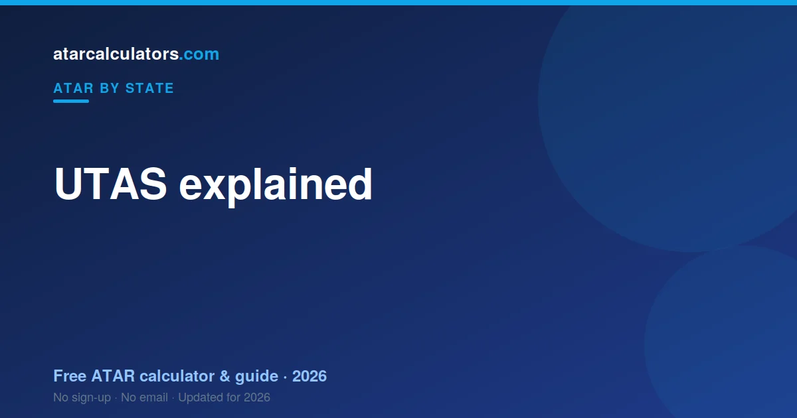

UTAS is the University of Tasmania, the state’s university, and it manages admissions for Tasmanian students, since Tasmania has no separate tertiary admissions centre. Your ATAR is built from your best pre-tertiary Level 3 and 4 subject scores, scaled and combined into a Tertiary Entrance rank. TASC sets and assesses the TCE courses; UTAS turns those results into an ATAR and a university place.
Key takeaways
- UTAS is the University of Tasmania, the state’s university.
- Tasmania has no separate admissions centre — UTAS fills that role.
- Your ATAR comes from your best pre-tertiary Level 3 and 4 scores.
- Those scaled scores form a Tertiary Entrance rank.
- TASC sets and assesses the TCE courses.
- A Tasmanian ATAR is directly comparable to any other state’s.

What is UTAS?
UTAS stands for the University of Tasmania. It is the state’s university, and because Tasmania does not run a separate tertiary admissions centre, UTAS also plays the role that a body like UAC or VTAC plays in other states.
So in Tasmania, the university and the admissions process are closely linked. When Tasmanian students ask how they get their ATAR and their university place, UTAS is central to both answers.
This is a genuine difference from the mainland, where a separate admissions centre sits between students and the universities. In Tasmania, UTAS is that point of contact.
UTAS as Tasmania’s Tertiary Admissions Centre
In every state, a tertiary admissions centre sits at the centre of university entry. On the mainland, these are separate organisations: UAC for NSW and the ACT, VTAC for Victoria, QTAC for Queensland, SATAC for South Australia and the Northern Territory, and TISC for Western Australia. In Tasmania, the University of Tasmania itself operates the state’s Tertiary Admissions Centre for university entrance. That is why you will often see UTAS described as both a university and the Tasmanian TAC.
Because UTAS acts as the TAC, it is UTAS that sets the requirements for receiving an ATAR in Tasmania. TASC supports the calculation under an agreement with the University and issues eligible students with an ATAR Statement at the end of their Year 12 or Year 13 school year.
What this means for you
- One main point of contact. For most Tasmanian school leavers, UTAS is both the place you apply to and the body that sets the rules for your ATAR.
- Direct communication. Questions about entry, offers and pathways usually go straight to the University rather than through a separate centre.
- The same national ATAR. Even though the arrangement is different, the ATAR you receive is the same national rank used in every other state.
A sense of scale
UTAS is a significant part of Australia’s admissions system. In January 2025, the national group of admissions centres reported that the University of Tasmania, as the Tasmanian TAC, had made 25,065 offers for Semester 1 2025 courses. The University also notes that about 40 per cent of its students come directly from Year 12, so most of its students arrive by other routes, such as pathways, later applications or interstate and international entry.
Why Tasmania works differently
Tasmania is the only state where the main university also operates the Tertiary Admissions Centre. On the mainland, several universities in each state share a separate admissions centre, which processes applications for all of them and coordinates offer rounds. In Tasmania, the University of Tasmania is the state’s university, so it makes sense for it to run the admissions process for Tasmanian school leavers directly.
For students, the practical effect is simplicity. Rather than navigating a centre that represents many institutions, Tasmanian students deal with the University itself for entry requirements, early offers, ATAR-based offers and enrolment. TASC, the state’s senior secondary authority, sits alongside it, looking after courses, assessment and certification.
What UTAS is not
- It is not the body that assesses your Year 12 courses; that is TASC.
- It is not the only university you can apply to; Tasmanian students can apply to universities across Australia using their ATAR.
- It is not a separate admissions centre in the mainland sense; it is a university that also operates the state’s Tertiary Admissions Centre.
Where UTAS fits in the national system
Australia’s tertiary admissions centres work together so that the ATAR means the same thing everywhere. The University of Tasmania, as the Tasmanian TAC, takes part in that national system. When the centres report national offer figures, the University of Tasmania is listed alongside UAC, VTAC, QTAC, SATAC and TISC.
How UTAS’s dual role helps students
- Clear information. Because the University sets both the ATAR rules and its own entry requirements, students can get answers about both from one place.
- Early entry. The University can run its own early-entry scheme, the Schools Recommendation Program, tailored to Tasmanian schools.
- Fast offers for Tasmanians. First-round ATAR-based offers to Tasmanian Year 12 applicants arrive in mid-December, soon after results.
- Connections with schools. Programs such as HAP and UCP let school students take university units that can count towards their TE Score.
What to expect when you start at UTAS
Orientation
Before semester begins, the University runs orientation activities to help new students find their way, meet others and learn about support services.
A different style of learning
University study usually involves more independent learning than school. You will attend classes, complete readings and assessments, and manage your own time across several units.
Support services
Like other universities, UTAS offers support for study skills, wellbeing and other needs. New students who use these services early often settle in more quickly.
Your results now
Once you start, your university results become the main measure of your progress. They matter for transfers, scholarships and further study far more than your ATAR does.
UTAS at a glance
- Full name: University of Tasmania.
- Role in admissions: operates Tasmania’s Tertiary Admissions Centre for university entrance.
- Sets: the requirements for receiving an ATAR in Tasmania, and its own course entry requirements.
- Works with: TASC, which supports the ATAR calculation and issues ATAR Statements.
- Early entry: the Schools Recommendation Program.
- Offers: first-round ATAR-based offers to Tasmanian Year 12 applicants in mid-December.
What does UTAS do?
UTAS manages university admissions for Tasmanian students. It handles applications, sets entry requirements for its courses, and makes offers. It also uses your ATAR, alongside other pathways, to decide entry.
Because it is the state’s main university, UTAS is where most Tasmanian school leavers apply. Rather than applying through a separate centre and then to universities, Tasmanian students deal largely with UTAS directly.
So UTAS is both the destination and, in effect, the gateway. Understanding how it works helps you see how your TCE results become a university place.
The University’s role in more detail
The University’s admissions work spans the whole journey from Year 12 to enrolment:
- Setting entry rules. UTAS sets its General Entry Requirements and any extra subject requirements for particular courses.
- Running early entry. Through the Schools Recommendation Program, UTAS makes early offers to Year 12 students based on their teachers’ recommendations.
- Using the ATAR. Once ATARs are released, UTAS makes first-round offers to Tasmanian Year 12 applicants based on their ATAR.
- Assessing other applicants. It also assesses interstate, International Baccalaureate, mature-age and other applicants.
- Enrolling students. Successful applicants accept their offers and enrol in their units.
What TASC does, step by step
TASC, the Office of Tasmanian Assessment, Standards and Certification, is responsible for senior secondary standards and certification in Tasmania. Its work underpins every Tasmanian ATAR.
Accrediting courses
TASC accredits the senior secondary courses taught in Tasmanian schools and colleges, including the Level 3 and Level 4 courses that count towards the TE Score.
Overseeing assessment
TASC oversees how courses are assessed, including external assessment such as written examinations for many Level 3 and 4 courses. It also sets dates and rules, such as the dates after which schools cannot move students into or between Level 3 or 4 courses for the year.
Awarding the TCE
TASC awards the Tasmanian Certificate of Education, which is one of the requirements for an ATAR.
Scaling
TASC determines the scaling process and applies it to Level 3 and Level 4 courses and to approved HAP and UCP units, publishing scaling reports each year.
Issuing results and ATAR Statements
TASC issues each student’s results at the end of the year and, under its agreement with the University, issues eligible students with an ATAR Statement.
Supporting students
TASC publishes plain-English guides, such as “Understanding the ATAR” and “Focus on: TE Score and ATAR Calculation”, which explain the rules in detail.
From TE Score to ATAR, in more detail
Comparison with your peers
The University’s fact sheet explains that your TE Score is compared with the TE Scores achieved by your peers, and you are then issued with an ATAR. The ATAR shows where you rank in your year group, on the national scale from 0 to 99.95.
What an ATAR of 80 means in Tasmania
The University explains that an ATAR of 80.00 indicates that a student has an overall TE Score equal to, or better than, 80 per cent of Year 12 school leavers in Tasmania that year. That matches the national meaning of the ATAR as a rank.
Why a TE Score is not an ATAR
A TE Score is a total of scaled course scores, while the ATAR is a rank. Two students with similar TE Scores receive similar ATARs, but the same TE Score can correspond to slightly different ATARs in different years, because the ranking depends on that year’s students.
What your ATAR Statement shows
Your ATAR Statement includes your TE Score, your ATAR and the courses and course results used to calculate them, so you can see exactly which results counted.
TASC and UTAS: a detailed comparison
Because confusing the two bodies is the most common mistake Tasmanian students make, it is worth setting out their roles in full.
TASC’s responsibilities
- Accrediting senior secondary courses at all levels, including Level 3 and Level 4.
- Overseeing assessment, including external examinations.
- Setting course movement and other deadlines.
- Scaling Level 3 and 4 courses and approved HAP and UCP units.
- Awarding the Tasmanian Certificate of Education.
- Issuing Statements of Results and, under agreement with the University, ATAR Statements.
- Running the exam inspection process.
- Publishing guides on the ATAR, the TE Score and scaling.
UTAS’s responsibilities
- Operating Tasmania’s Tertiary Admissions Centre for university entrance.
- Setting the requirements for receiving an ATAR in Tasmania.
- Setting its own course entry requirements and prerequisites.
- Running the Schools Recommendation Program and other entry schemes.
- Offering HAP and UCP units to school students.
- Making offers and enrolling students.
- Providing pathways and support for students who do not enter directly.
Where they overlap
Both bodies publish information about the ATAR, which is why students sometimes find the same topic explained on both the TASC and University websites. TASC explains the courses, assessment and calculation; the University explains entry, offers and what the ATAR means for admission. The 2025 calculation change was decided by the University as the TAC and communicated by both bodies.
A simple rule of thumb
If your question is about a course, an exam, a result or your certificate, start with TASC. If it is about getting into university, an offer or enrolment, start with the University. If it is about how your ATAR is calculated, either can help, and your ATAR Statement shows the detail.
Common pitfalls to avoid
A few avoidable mistakes come up again and again for Tasmanian students. Knowing them in advance helps you plan better.
Treating Year 11 as a practice year
Under the 2025 rule, strong Level 3 results in Year 11 can count towards your TE Score. Treating Year 11 as a throwaway year can cost you results that would have counted among your best.
Overlooking prerequisites
A strong ATAR cannot replace a missing prerequisite. Students who do not check course requirements early can find they are not eligible for a course despite a good result.
Confusing TASC and UTAS
Sending a question to the wrong body can waste time. Remember that TASC handles courses, assessment and the TCE, while UTAS handles university entry.
Relying on old advice
Advice based on the pre-2025 rules may no longer apply. Check current information, especially about which years’ results can count.
Missing the Schools Recommendation Program
Students who do not consider the SRP can miss a chance at an early offer. It is worth looking into early in Year 12.
Taking only the minimum courses
Taking only four Level 3 courses leaves no buffer if one result is lower than expected. Taking five gives you more room.
Leaving applications late
Missing application, interview or enrolment deadlines can cost you a place. Note the key dates and act on time.
Forgetting about pathways
If your ATAR falls short, pathways can still lead to your preferred degree. Students who do not explore them may give up on a goal unnecessarily.
UTAS vs TASC
Students often confuse UTAS with TASC, but they do different things. TASC, the Office of Tasmanian Assessment, Standards and Certification, sets the senior secondary courses, oversees their assessment, and awards the TCE.
UTAS comes at the university end. It uses the results TASC produces to work out entry, through your ATAR and other pathways, and it manages your application and offer. In short: TASC runs the courses and assessment; UTAS handles university entry.
So the two bodies are a relay. TASC assesses your subjects, and UTAS turns those results into a university place. They are separate organisations with separate roles.
How TASC and UTAS work together on your ATAR
The two organisations each handle a different stage of the same process:
| Stage | Who handles it | What happens |
|---|---|---|
| Courses and assessment | TASC | Accredits Level 3 and Level 4 courses, oversees assessment and awards results |
| Certificate | TASC | Awards the Tasmanian Certificate of Education (TCE) |
| Scaling | TASC | Scales Level 3 and 4 courses, and approved UTAS HAP and UCP units |
| ATAR rules | UTAS, as the Tertiary Admissions Centre | Sets the requirements for receiving an ATAR |
| ATAR Statement | TASC, under agreement with UTAS | Issues eligible students with an ATAR Statement |
| Offers and enrolment | UTAS | Makes offers and enrols students |
Based on information published by TASC and the University of Tasmania.
Where students get confused
The names are similar, and both organisations publish information about the ATAR, so it is easy to mix them up. A simple way to remember: TASC is about your senior secondary courses and results; UTAS is about university entry. If your question is about a course result, an exam or your TCE, it is a TASC question. If it is about an offer, entry requirements or enrolment, it is a UTAS question. Questions about how the ATAR is calculated may involve both.
Your results and your ATAR Statement
At the end of the year, TASC issues your results. If you are eligible for an ATAR, an ATAR Statement is included with your Year 12 results. TASC explains that the statement shows your TE Score and ATAR, along with the courses and course results used to calculate them. Your Statement of Results also lists all the courses you studied that year, with their size in TCE credit points and your award in each.
Understanding your TCE results
Before your ATAR is calculated, TASC issues your results. Knowing how to read them helps you understand where your TE Score comes from.
Your Statement of Results
TASC’s results newsletter explains that the Statement of Results lists all the courses you studied in the year, including each course’s code and title, its size in TCE credit points and its level, from Preliminary Level to Level 4.
Awards
Each course receives an overall award, ranging from the highest awards, Exceptional Achievement and High Achievement, through Satisfactory Achievement, down to lower awards. A Satisfactory Achievement or better is needed for a Level 3 or Level 4 course to count towards ATAR eligibility. TASC publishes an “Understanding Assessment” guide explaining how your overall award is worked out.
Course scores and the TE Score
For Level 3 and Level 4 courses, your results produce course scores, which are scaled and may be counted towards your TE Score. If you are eligible for an ATAR, your ATAR Statement shows your TE Score, your ATAR and the courses and results used.
If something looks wrong
If a result does not match what you expected, talk to your school. TASC also runs a process for inspecting written examination material, with deadlines each year.
Scaling in Tasmania, in more depth
Scaling is central to how your TE Score is built, so it is worth understanding beyond the basics.
What scaling compares
TASC describes scaling as a complex mathematical process that analyses the results achieved by senior secondary students. It aligns results from different units and courses onto a common scale so that they can be fairly compared. The aim is that a given course score represents a similar level of achievement whichever course it comes from.
Why a course score is not a raw mark
Your course score for a Level 3 or 4 course is the result after scaling, not your raw assessment mark. TASC’s student fact sheet describes scaled courses as reflecting how difficult it was to achieve a particular award compared with awards achieved in other courses. Two students with the same award in different courses can therefore end up with different course scores.
HAP and UCP scaling
TASC applies essentially the same scaling method to approved HAP and UCP units, except that University of Tasmania results are used. Because these units can be smaller than a full course, only the appropriate fraction of the scaled score counts: an 8-point unit contributes 8/15 of its course score to the TE Score.
Scaling changes each year
Because scaling depends on the students taking each course, it is recalculated each year. Patterns from past years are a useful guide, but they are not a guarantee of how a course will scale in your year. TASC publishes scaling reports so that students and schools can see the established process.
What scaling means for your choices
The practical message is the same as elsewhere: your result within a course matters more than how the course scales. Choose Level 3 and 4 courses you are good at and interested in, and treat scaling information as a guide rather than a reason to avoid a subject you would do well in. Our guide to the best scaling subjects in Tasmania explains more.
How your ATAR is worked out
Your ATAR in Tasmania is built from your best pre-tertiary subjects, the Level 3 and Level 4 courses designed to count towards university entrance. Each is scaled so that a score in one subject is comparable to a score in another.
Scaling reflects how strong the students taking a subject are across all their subjects, not how hard the subject feels. A subject scales up when its cohort is strong, and down when it is broad. See how scaling works.
Your scaled pre-tertiary scores are then combined into a rank. So it is your scaled results in your best pre-tertiary subjects, not your raw marks, that drive your ATAR.
The terms you will see
Different documents use slightly different wording for the same idea. You may see “Tertiary Entrance rank”, “Tertiary Entrance Score”, “TE Score” or “TES”. In current TASC and University materials, the TE Score is the total of your best scaled Level 3 and 4 course scores, and the ATAR is the rank produced from it. When you read older material, check whether it describes the rules before or after 2025.
Why the best results are used
Using only your best results means your ATAR reflects your strongest work. It also means you can take an extra course you are interested in without risk, because a weaker result simply will not count. That is one of the reasons the University can describe the TE Score as being built from your best four to five eligible results.
Understanding the points system
The points system is a simple way to make sure every TE Score is built from a comparable amount of study.
Why points, not just courses
Not every unit is the same size. A full Level 3 or 4 course is worth 15 points, but a one-semester HAP or UCP unit is worth 8. Counting points rather than courses lets the system combine full courses and smaller units fairly.
The 60 to 75 point range
Your TE Score is built from a total of 60 to 75 points. Four full courses give 60 points, the minimum. Five full courses give 75 points, the most common total. Combinations that include 8-point units can involve more units while staying within the range.
Worked point totals
- Five Level 3 courses: 5 × 15 = 75 points.
- Four Level 3 courses: 4 × 15 = 60 points.
- Four Level 3 courses plus a HAP unit: 60 + 8 = 68 points, with the HAP unit contributing 8/15 of its score.
- Three Level 3 courses plus a full-year UCP unit: 3 × 15 + 15 = 60 points, with the UCP unit treated like a course.
Why the range has a cap
Capping the total at 75 points keeps every student’s TE Score built from a comparable amount of study, whether they took exactly five courses or a mix of courses and units. Extra study beyond the cap does not add to the total, but it can replace a weaker result among your best.
The Tertiary Entrance rank
From 2025, Tasmania combines your best Level 3 and 4 course scores from any two years of senior study (Years 11, 12 or 13) into a Tertiary Entrance (TE) Score, which is expressed as an ATAR. For most students, that means their strongest five Level 3 and 4 courses carry their result.
Because only your best results count, attempting more pre-tertiary subjects does not penalise you. The rank uses the combination that works most in your favour, which gives you room to try more subjects without risk.
The higher your combined scaled score across those best five, the higher your ATAR, since the ATAR is that combined score expressed as a rank.
How the TE Score is built from 2025
Tasmania’s ATAR is based on your Tertiary Entrance Score, usually called your TE Score. TASC describes it as a measure of your overall academic achievement in Years 11 and 12. From 2025, the University changed how the TE Score is put together.
The 2025 rule
TASC announced that, from 2025 onwards, an ATAR is calculated using an eligible student’s best results in Level 3 and 4 courses over two years of senior secondary education, using any combination of two years from Years 11, 12 or 13. The University describes the TE Score in the same way: it combines your best Level 3 or Level 4 course scores from two senior secondary years.
Points, not just courses
The TE Score is built by adding course scores up to a set total of points. TASC explains that Level 3 and Level 4 TASC accredited courses, and NIAL courses, provide 15 points each, while University of Tasmania High Achiever Program units provide 8 points for a unit with one semester of study. The best course scores are added together until they reach a total of 60 to 75 points.
- Four courses: you can receive a TE Score with only four Level 3 and 4 courses over two years, which gives the minimum total of 60 points.
- Five courses: using five Level 3 and 4 courses over two years, for a total of 75 points, is the most common way to receive a TE Score.
From TE Score to ATAR
Your TE Score is then compared with the TE Scores achieved by your peers, and you are issued with an ATAR between 0 and 99.95. The University gives an example: an ATAR of 80.00 means a student has an overall TE Score equal to, or better than, 80 per cent of Year 12 school leavers in Tasmania that year.
Best Level 3 and 4 course scores from any two years of senior study, each worth 15 points, added up to 60 to 75 points, form your TE Score, which is then ranked to give your ATAR.
TE Score examples
TASC publishes worked examples showing how TE Scores are built. The illustrations below follow the same structure, with invented scores, to show how the rules work in practice.
Example 1: five courses over Years 11 and 12
Mia completes two Level 3 courses in Year 11 and four in Year 12. Her TE Score uses her best five course scores across those two years, for a total of 75 points. Her weakest Year 12 course is left out because her two Year 11 courses scored more highly. Under the rules that applied before 2025, she would have needed at least three of her counted courses from her final year; under the 2025 rule, her best results from the two years can be combined.
Example 2: four courses
Jack completes only four Level 3 and 4 courses with a Satisfactory Achievement or better across Years 11 and 12. He can still receive a TE Score, using those four courses for the minimum total of 60 points. TASC notes that some students use four courses, for example when one course result is below Satisfactory Achievement and cannot count.
Example 3: including a HAP unit
Ava takes a University of Tasmania High Achiever Program unit in Year 12 alongside her Level 3 courses. The one-semester unit provides 8 points, so it can contribute part of her total. TASC explains that a single 8-point unit cannot by itself replace a full course, because 15 points are needed to reach the minimum total of 60.
Example 4: a Year 13 student
Liam studies across Years 11, 12 and 13. Under the 2025 rule, his TE Score uses his best results from any two of those three years. TASC’s published examples include a Year 13 case to show how this works.
Illustrative examples only. See TASC’s “Focus on: TE Score and ATAR Calculation” for its official worked examples.
ATAR eligibility in Tasmania
Not every Tasmanian Year 12 student receives an ATAR. The requirements are set by the University of Tasmania as the state’s Tertiary Admissions Centre.
The requirements
TASC’s 2025 results newsletter sets out the requirements. To achieve an ATAR in Tasmania, you need to complete at least two years of post-Year 10 study and:
- achieve the TCE; and
- achieve an award of Satisfactory Achievement or better in at least four TASC Level 3 or Level 4 courses, or equivalent, including HAP and UCP courses.
General Entry Requirements at UTAS
The University’s General Entry Requirements are closely linked. You meet them if you have completed the TCE and have Satisfactory Achievement results in at least four, and a maximum of five, Level 3 or Level 4 subjects accredited by TASC, among other routes. Some courses also require specific TCE Level 3 or Level 4 subjects, or interstate equivalents, in addition to the General Entry Requirements.
If you are not eligible
Students who do not meet the ATAR requirements can still reach university. The University emphasises that it has a place for students through a range of routes, including the Schools Recommendation Program and alternative pathways for those who do not meet minimum entrance requirements.
What changed in 2025
The 2025 change was described by TASC as a minor change to the ATAR calculation process, decided by the University of Tasmania as the Tertiary Admissions Centre.
Before 2025
Under the earlier rules, an eligible student’s ATAR was calculated using the best three scores from their final year of study, usually Year 12, and the two best scores from that same year or one other year. TASC’s 2024 newsletter also noted that at least three of the four or more qualifying courses had to be in the final year.
From 2025
From 2025, the ATAR uses an eligible student’s best results in Level 3 and 4 courses over two years of senior secondary education, from any combination of two years from Years 11, 12 or 13.
Why the change was made
The University’s fact sheet explains that the earlier approach could be challenging for some students, for example those who perform better in Year 11 than Year 12, or who do not complete as many subjects in Year 12, making it harder to achieve the highest possible ATAR. The University phased in the change to allow time to communicate it, recognising that students then in Year 12 had already made decisions about which courses they would take in their final year.
What it means in practice
- Strong Year 11 results in Level 3 courses can now count more fully.
- Students who take fewer Level 3 courses in Year 12 are less disadvantaged.
- Older calculators and advice based on the pre-2025 rules may no longer be accurate.
What a Tasmanian ATAR measures, and what it does not
A rank, not a mark
Your ATAR is a rank between 0 and 99.95. It shows where your TE Score sits compared with other Tasmanian students that year. The University explains it with an example: an ATAR of 80.00 means your TE Score is equal to or better than that of 80 per cent of Year 12 school leavers in Tasmania that year. It is not a percentage of marks and not an average of your course results.
A measure of your best results
Because the TE Score uses your best Level 3 and 4 results from two years, your ATAR reflects your strongest academic work rather than every course you took. A weaker course outside your best results does not lower your ATAR.
A national currency
Every state produces ATARs on the same scale, and universities across Australia accept them. A Tasmanian ATAR is used on the same basis as one from any other state.
What it does not measure
- It does not measure your ability in courses outside your best results.
- It does not capture interests, skills or qualities that sit outside formal assessment.
- It does not decide your whole future; it is a tool for university entry.
Why other measures matter too
The University’s Schools Recommendation Program reflects this. By assessing applicants on their teachers’ recommendations rather than an ATAR, it recognises that a single number does not capture everything about a student’s readiness for university.
How the national ATAR system fits together
The ATAR works across Australia because the admissions centres cooperate. Understanding this helps you see why a Tasmanian ATAR travels so easily.
A shared scale
Every centre produces ATARs on the same 0 to 99.95 scale, representing a student’s position in their state’s age group. Although each state calculates its aggregate differently, the final rank means the same thing everywhere.
Cooperation between centres
The admissions centres work together, publish combined information and report national offer figures. In December 2025, for example, they jointly announced ATAR release dates and prepared for the ATAR’s calculation across the country. The University of Tasmania takes part in this as the Tasmanian TAC.
Student mobility
Because ATARs are comparable, students can apply across state borders. A Tasmanian student can apply to a mainland university, and a mainland student can apply to UTAS, each using their own ATAR. The admissions centres describe the ATAR as a key enabler of student mobility.
What this means for you
Whether you plan to stay in Tasmania or study elsewhere, your ATAR is a national currency. Build it through strong results in your best Level 3 and 4 courses, and it will serve you wherever you apply.
A Tasmanian ATAR in context
It can help to see how a Tasmanian ATAR sits alongside results elsewhere, while remembering that the ATAR means the same position in the age group everywhere.
The same meaning
An ATAR of 80 in Tasmania, as the University explains, means a TE Score at or above that of 80 per cent of Tasmanian Year 12 school leavers that year. An ATAR of 80 in another state means the same position among that state’s students. The rank is national.
Different paths to the same rank
A Tasmanian student reaches an ATAR of 80 through a TE Score built from Level 3 and 4 courses over two years. A NSW student reaches the same ATAR through scaled HSC marks in 10 units, and a Victorian student through scaled VCE study scores. The calculations differ, but the rank is comparable.
Judging a good Tasmanian ATAR
As in every state, a good ATAR is one that, with any adjustments, opens the course you want. Our guide to a good ATAR in Tasmania explains how to judge your result against your goals, and our guide to Tasmanian ATAR cut-offs explains how to read course thresholds.
Tasmanian ATAR essentials in one table
| Topic | Key point |
|---|---|
| Admissions centre | The University of Tasmania operates the state’s Tertiary Admissions Centre |
| Courses and assessment | TASC accredits, assesses and scales Level 3 and 4 courses |
| Certificate | TASC awards the Tasmanian Certificate of Education (TCE) |
| Aggregate | TE Score from the best Level 3 and 4 results over two years, 60 to 75 points |
| Points per course | 15 for a Level 3 or 4 course; 8 for a one-semester HAP or UCP unit |
| Eligibility | TCE plus Satisfactory Achievement or better in at least four Level 3 or 4 courses |
| University units | Approved HAP and UCP units can contribute |
| Early entry | Schools Recommendation Program, based on teachers’ recommendations |
| Offers | First-round ATAR-based offers to Tasmanian Year 12 applicants in mid-December |
| The ATAR | A national rank from 0 to 99.95, accepted across Australia |
A summary based on TASC and University of Tasmania information. Confirm current details with each body.
A final checklist before results
- My Level 3 and 4 courses across Years 11 and 12 are confirmed.
- I am on track for the TCE and at least four qualifying courses.
- I have checked the prerequisites for the courses I want.
- I have considered the Schools Recommendation Program.
- I have checked any interview or audition requirements.
- I have estimated my ATAR using a calculator that reflects the 2025 rules.
- I know when results and offers are released.
- If applying interstate, I know each admissions centre’s deadlines.
- I know the pathways available if I fall short.
- I know who to contact at TASC and the University.
With these in place, you can approach results day with a clear plan. Whatever your result, remember that UTAS offers more than one way in, and that your ATAR is one step in a longer journey.
Is a Tasmanian ATAR comparable?
Yes. Although Tasmania calculates entrance through UTAS using TCE results, the ATAR itself is national. An ATAR of 85 from Tasmania means the same as an ATAR of 85 from any other state: you finished ahead of about 85 percent of the relevant age group.
So a Tasmanian ATAR is directly comparable to an interstate one, and it is recognised by universities across Australia. If you plan to study on the mainland, your Tasmanian ATAR travels with you and is assessed the same way as a local one.
HAP and UCP units
Tasmania has a feature no other state shares in the same way: some University of Tasmania units completed while still at school can count towards your ATAR.
What they are
The High Achiever Program (HAP) and the University Connections Program (UCP) let senior secondary students study University of Tasmania units. TASC’s scaling process applies to approved HAP and UCP units as well as to TASC-accredited Level 3 and Level 4 courses.
How many points they provide
- HAP units provide 8 points for a unit with one semester of study.
- UCP units provide 8 points for a one-semester unit or 15 points for a full-year unit.
Because a 15-point UCP unit is worth the same as a Level 3 or Level 4 course, TASC explains that it can be used interchangeably with, or instead of, a Level 3 or 4 course in an overall TE Score. An 8-point unit, by contrast, counts as 8/15 of a course: TASC’s scaling report notes that only 8/15 of the course score achieved is considered in the TE Score calculation.
How they are scaled
TASC explains that HAP and UCP units are scaled using essentially the same method as other courses, except that University of Tasmania results are used. TASC publishes a separate HAP and UCP scaling report each year.
Should you take one?
HAP and UCP units can be a rewarding way to experience university study and, in some cases, contribute to your TE Score. Whether they help your ATAR depends on your result and how the unit fits with your other courses. Talk to your school and the University about whether a unit suits you.
Comparing Tasmanian results with other states
Different calculations, same scale
Each state builds its aggregate differently. NSW uses scaled marks in 10 units, Victoria uses scaled study scores, Queensland and Western Australia use a Tertiary Entrance Aggregate, South Australia and the NT use a 90-credit university aggregate, and Tasmania uses the TE Score. In every case, the aggregate is turned into an ATAR on the same 0 to 99.95 scale.
What is distinctive about Tasmania
- The University operates the Tertiary Admissions Centre.
- Results from two years of senior study can count, from Years 11, 12 or 13.
- Approved University units completed at school can contribute.
- The TE Score uses a points total of 60 to 75.
What this means if you move states
If you move between Tasmania and another state during senior school, check how your results will be treated, because each system has its own rules about which results count. If you complete Year 12 in one state and apply to university in another, your ATAR is used directly.
Our comparison of the TCE with other states explains the differences in more detail.
The old and new rules side by side
| Feature | Before 2025 | From 2025 |
|---|---|---|
| Which results count | Best three scores from the final year, plus the two best from that year or one other year | Best Level 3 and 4 results from any two years of senior study |
| Years that can count | Final year plus, for up to two results, one other year | Any combination of two years from Years 11, 12 or 13 |
| Final-year requirement | At least three qualifying courses in the final year | No fixed final-year minimum in the calculation |
| Points total | Usually the best five courses | 60 to 75 points, usually the best five courses |
| Who decides | University of Tasmania as the TAC | University of Tasmania as the TAC |
Summary based on TASC and University of Tasmania information about the 2025 change.
Who benefits most
The University’s explanation suggests the change particularly helps students who perform better in Year 11 than in Year 12, and students who take fewer Level 3 courses in their final year. For students whose best results were already in their final year, the practical difference may be small.
What stayed the same
Course scaling by TASC, the use of Level 3 and 4 courses and approved University units, the ranking of TE Scores against peers and the national ATAR scale all remain.
Year 13 in Tasmania
Some Tasmanian students continue senior secondary study into a third year, often called Year 13. This can happen for many reasons: to complete additional Level 3 courses, to improve results, to meet course prerequisites or to balance study with other commitments.
How Year 13 fits the 2025 rule
Under the 2025 rule, the TE Score uses the best Level 3 and 4 results from any combination of two years from Years 11, 12 or 13. A Year 13 student can therefore have results from that year counted, alongside results from one other year.
Things to consider
- Whether Year 13 study is likely to improve your TE Score enough to matter for your goals.
- Whether a pathway program or direct application might reach the same goal sooner.
- How Year 13 timing affects your application and offer dates.
Talk to your school and the University before deciding, and see TASC’s published Year 13 example.
Applying to UTAS: a closer look
Choosing your courses
Start by exploring the University’s courses and their entry requirements. Note any subject prerequisites, interviews, auditions or portfolio requirements, and check which campus offers each course.
Early entry or ATAR-based entry
If you are in Year 12, decide whether to apply through the Schools Recommendation Program for an early offer. Even if you do, you will still receive your results and, if eligible, an ATAR Statement in December.
Additional requirements
For courses that need an interview or audition, such as Music, Performing Arts and Fine Arts, the University notes that these begin in November. Prepare your materials early.
After results
Once results are released, the University makes first-round ATAR-based offers to Tasmanian Year 12 applicants in mid-December. Check your email and the University’s applicant portal for offers.
Accepting and enrolling
Accept your offer before the deadline, meet any conditions and enrol in your units once enrolment opens.
If things do not go to plan
If you do not receive the offer you hoped for, contact the University to discuss related courses and pathways. Many students reach their preferred course by another route.
Planning around prerequisites in detail
Because the University notes that some courses require specific TCE Level 3 or Level 4 subjects in addition to its General Entry Requirements, prerequisites deserve careful planning.
Find the prerequisites early
Look up the courses you are interested in while you are choosing your Year 10 and Year 11 subjects. Note any required or assumed Level 3 or 4 subjects, and plan to take them in time.
Distinguish required from assumed
A required subject is one you must have completed. An assumed subject is one the course expects you to know; if you have not studied it, you may still be eligible but may need a bridging option. Check how each course describes its requirements.
Allow for sequences
Some subjects build on earlier ones, especially in mathematics and the sciences. Make sure you take the earlier courses in time to reach the Level 3 or 4 course you need.
Keep options open
If you are unsure what you want to study, taking a broad set of Level 3 courses, including a mathematics course, keeps the most options open.
Check interstate equivalents
If you studied interstate, the University notes that interstate equivalents of TCE subjects may satisfy prerequisites. Check how your subjects map across.
Accommodation and student life
For students moving to study at UTAS, practical matters such as accommodation and student life are part of the decision.
Accommodation
The University’s guides for students and parents include information on accommodation. Look into University-managed and private options early, especially if you are moving from interstate or from a regional part of Tasmania.
Scholarships and costs
The University publishes information on scholarships, fees and costs. Some scholarships support students from particular backgrounds or regions, and some have early deadlines, so check them while you apply.
Campuses
The University has campuses in different parts of Tasmania. Check which campus offers your course and what student life is like there.
Support for new students
New students have access to orientation, academic support and wellbeing services. Using them early helps you settle in.
Applying to UTAS
Tasmanian students generally apply to UTAS directly. You list the courses you want, and UTAS assesses your application against its entry requirements, using your ATAR and any other pathways you qualify for.
Because UTAS is the state’s university, this is a more direct process than the multi-preference systems on the mainland. Still, it is worth applying for the courses you genuinely want and understanding each one’s requirements.
UTAS also considers applicants from interstate and offers a range of courses, so its admissions process is not limited to Tasmanian school leavers.
Steps in the application process
- Explore courses. Look at UTAS courses, their entry requirements and any prerequisite subjects.
- Consider early entry. Apply through the Schools Recommendation Program if you are in Year 12 and eligible.
- Check additional requirements. Some courses, such as Music, Performing Arts and Fine Arts, use interviews or auditions, which UTAS notes begin in November.
- Receive your results. Your TCE results and, if eligible, your ATAR Statement arrive in December.
- Receive offers. UTAS makes first-round offers to Tasmanian Year 12 applicants based on their ATAR in mid-December.
- Accept and enrol. Accept your offer and enrol in your units. UTAS notes that Year 12 enrolment opens after ATARs are released.
Prerequisites matter
UTAS notes that specific TCE Level 3 or Level 4 subjects, or interstate equivalents, may be required for entry to some courses in addition to the General Entry Requirements. Check these when you choose your senior courses, because an ATAR cannot replace a missing prerequisite.
After you receive an offer
Receiving an offer from UTAS is an exciting moment, but there are a few steps before you start.
Read your offer carefully
Your offer letter sets out the course, the campus, the start date and any conditions. Conditions might include finishing Year 12 or passing specific subjects that are prerequisites for your course. Make sure you understand what you need to do and by when.
Accept your offer
Follow the instructions to accept your offer before the deadline. If you received early offers through the Schools Recommendation Program, the University explains that you can accept more than one, then decide which course to enrol in later in December.
Meet any conditions
If your offer is conditional, the conditions must be met before you can enrol. For Year 12 students, that usually means waiting for your results in December.
Enrol in your units
Once your results are received and any conditions are met, you can enrol in your units. For Year 12 students, the University notes that enrolment opens from mid-December, after ATARs are released, and that it emails students when enrolments open.
Prepare for orientation
Before semester starts, look out for orientation activities, information about your course and support services, and practical matters such as accommodation, transport and study materials.
If you change your mind
If you decide you would prefer a different course, contact the University. Depending on timing and availability, you may be able to change your course or accept a different offer.
Applying to mainland universities from Tasmania
Many Tasmanian students apply to universities on the mainland as well as, or instead of, UTAS. Your Tasmanian ATAR is accepted everywhere, but the process is different from applying to UTAS.
Apply through the relevant admissions centre
To apply to universities in other states, you usually apply through that state’s admissions centre: UAC for NSW and the ACT, VTAC for Victoria, QTAC for Queensland, SATAC for South Australia and the Northern Territory, and TISC for Western Australia.
Preference lists
Mainland admissions centres use preference lists, where you rank the courses you want and receive an offer for the highest preference you are eligible for. The number of preferences differs: UAC allows five, QTAC and TISC allow six, and VTAC allows eight.
Timing
Your Tasmanian ATAR needs to reach the mainland admissions centre before it can be used in an offer round, and each centre has its own offer dates. Check when the centre you are applying to expects to include Tasmanian ATARs.
Adjustments
Mainland universities have their own adjustment factor schemes, such as subject, regional and equity adjustments. Check whether you are eligible as a Tasmanian applicant.
Our guides to UAC, VTAC, QTAC, SATAC and TISC explain each mainland centre.
Entry for adults and non-school leavers
A large share of UTAS students arrive by routes other than straight from Year 12. If you are an adult returning to study, or a younger person who has been out of school for a while, here is how entry usually works.
Earlier enrolment
The University’s key dates show that enrolment for the coming year opens earlier for non-school leavers, in November, while Year 12 students’ enrolment opens after ATARs are released. That gives non-school leavers time to plan before the start of the year.
What can be considered
- Previous Year 12 results. An ATAR you received in the past does not expire.
- Previous tertiary study. University or other higher education study is usually assessed on its results.
- Vocational qualifications. Some qualifications can provide a basis for admission.
- Work and life experience. Some courses consider relevant experience.
- Preparation programs. Completing a preparation or enabling program can provide a basis for admission.
Getting advice
Because entry routes for adults vary by course, the best step is to contact the University’s admissions team, explain your background and ask which route suits you.
More misunderstandings, cleared up
“UTAS only takes students with high ATARs”
UTAS offers courses with a range of entry requirements, an early-entry program based on teachers’ recommendations and pathways for students who do not meet minimum requirements. It describes itself as having a place for students whatever happens.
“If I take more Level 3 courses, my ATAR will go down”
Your TE Score uses your best results up to 60 to 75 points. Extra courses only count if they are among your best, so they cannot lower your TE Score directly.
“Scaling means hard courses always help”
Scaling aligns results from different courses onto a common scale. A course only helps your TE Score if your result in it is among your best. Choose courses you can do well in.
“The ATAR Statement and my results are the same document”
Your Statement of Results lists all your courses and awards. The ATAR Statement, issued to eligible students, shows your TE Score, ATAR and the courses used.
“Interstate students get offers at the same time as Tasmanians”
Tasmanian Year 12 applicants receive first-round ATAR-based offers in mid-December, while interstate Year 12 and IB applicants receive first-round offers progressively in January.
“Old advice about the ATAR still applies”
Advice based on the pre-2025 rules, such as needing three counted courses from your final year, may no longer apply. Check current information from TASC and the University.
Choosing between entry routes
With several ways into UTAS, it can help to compare them side by side.
| Route | Based on | Timing | Best for |
|---|---|---|---|
| Schools Recommendation Program | Teachers’ recommendations | During Year 12, before results | Year 12 students who want an early offer |
| ATAR-based entry | Your ATAR and course requirements | Mid-December for Tasmanian Year 12 applicants | Students who meet the course’s ATAR requirements |
| Interstate and IB entry | Your interstate ATAR or IB result | Progressively in January | Students who completed Year 12 elsewhere |
| Alternative pathways | Preparation study and other criteria | Varies | Students who do not meet minimum requirements |
| Non-school-leaver entry | Prior study, qualifications or experience | Enrolment opens earlier | Adults and those returning to study |
A summary based on the University of Tasmania’s published information. Check current details for each route.
Combining routes
The routes are not mutually exclusive. A Year 12 student might apply through the SRP, receive an early offer, then also receive an ATAR-based offer in December, and choose between them. A student who misses out on direct entry might use a pathway to reach the same degree.
Support and services for applicants
The University provides a range of support for prospective students, which is worth using as you plan.
Schools relationship team
The University has a schools relationship team that works with Tasmanian schools and can answer questions from Year 12 students and parents. It lists a phone line, 13 8827 (13 UTAS), with prompts for Year 12 students and parents.
Information events
The University runs events and webinars for students and parents, including a series to help families prepare for university.
Guides and resources
The University publishes guides for parents and carers covering applications, enrolment, accommodation and scholarships, as well as an Opportunity Tracker of events for Years 10 to 12.
Admissions team
For detailed questions about entry requirements, pathways and offers, the University’s admissions team can help.
TASC resources
TASC’s plain-English guides explain the ATAR, the TE Score and scaling, and its results newsletter explains how to read your results.
Pathways and other entry
UTAS offers more than one way in. Beyond ATAR-based entry, it runs programs that recognise school recommendations, and enabling or foundation courses that provide a pathway for students who do not enter directly on their ATAR.
So your ATAR is one route, not the only one. If your ATAR does not meet a course requirement, a pathway program can still lead you to the degree you want. It is worth asking UTAS about the options for your situation.
The Schools Recommendation Program in detail
The Schools Recommendation Program (SRP) is the University’s main early-entry scheme for Year 12 students, and one of the most important things for Tasmanian students to understand.
How it works
The SRP gives Year 12 students the chance to receive an early offer for a place at university. Your application is assessed on the recommendation of those who know you best, your teachers, rather than on an ATAR result. The University recommends applying for early entry through the SRP.
Why it helps
An early offer can give you peace of mind and the freedom to focus on finishing Year 12. The University also notes that you can accept multiple offers, securing your place in the courses you have been offered and taking your time to decide which one to enrol in later in December.
Conditions
You still need to finish your Year 12 studies. Some offers have conditions, such as passing specific subjects if your chosen degree has prerequisites, and these are set out in your offer letter. The University emphasises that full participation in Year 12 is important preparation for successful university study.
Enrolling after an early offer
From mid-December, after the University receives your Year 12 results, you can enrol in your units, and the University emails you when enrolments open. Any conditions on your offer must be met before you can enrol.
If you are in Year 12 in Tasmania and interested in UTAS, look at the SRP early in the year. It is one of the clearest ways to secure a place before your ATAR is released.
UTAS pathways in more detail
The University emphasises that it has a place for students, whatever their result. Beyond ATAR-based entry and the Schools Recommendation Program, it offers several kinds of pathway. Specific programs and their requirements change over time, so check the University’s current information.
Alternative entry for students who miss minimum requirements
The University provides information on alternative pathways for students who do not meet its minimum entrance requirements. These can lead to a degree through preparation or bridging study.
Preparation and enabling study
Preparation programs build academic skills such as writing, research and study techniques. Completing one can provide a basis for admission to a degree.
Starting in a related course
Some students start in a related course and move into their preferred course later, based on their university results. Ask the University which courses are common starting points.
University study while at school
The High Achiever Program and the University Connections Program let school students take University of Tasmania units, some of which can count towards the TE Score. They can also build confidence and familiarity with university study.
Mature-age and non-school-leaver routes
Applicants who are not coming straight from school can be assessed on previous study, qualifications, work experience or preparation programs.
Talk to the University
Because the University runs its own admissions, you can usually discuss your situation directly with its admissions or schools relationship teams. The University lists a phone line, 13 8827 (13 UTAS), for Year 12 students and parents with questions about early entry.
Five Tasmanian students, five routes
These illustrative students show how different routes into UTAS work in practice.
Ella: an early offer
Ella applied through the Schools Recommendation Program early in Year 12, with her teachers’ support. She received early offers for two courses, accepted both, finished Year 12 and chose her course in December.
Jack: strong Year 11 results
Jack did very well in two Level 3 courses in Year 11 but found Year 12 harder. Under the 2025 rule, his TE Score combined his best results from both years, including his strong Year 11 courses.
Ava: a HAP unit
Ava took a High Achiever Program unit in Year 12. It gave her a taste of university study and, as an 8-point unit, contributed part of her TE Score.
Liam: a pathway
Liam did not meet the requirements for his preferred course. He enrolled in a preparation pathway, built his skills and then moved into his degree.
Sophie: interstate
Sophie completed Year 12 in Victoria and applied to UTAS with her Victorian ATAR. She received a first-round offer in January, when offers to interstate applicants are made.
These students are illustrative.
Deciding whether to take a HAP or UCP unit
Benefits
- A taste of university. Studying a University of Tasmania unit while at school can build confidence and familiarity with university expectations.
- A possible TE Score contribution. Approved units are scaled by TASC and can contribute 8 or 15 points to your TE Score.
- Depth in an area you love. Units can extend your learning in a subject you are passionate about.
Things to weigh
- Workload. A university unit adds study time alongside your school courses.
- Points. An 8-point unit contributes only 8/15 of its course score to the TE Score, and cannot replace a full course on its own.
- Results. Like any course, a unit only helps your TE Score if your result is among your best.
Questions to ask
- Is this unit approved for scaling and inclusion in the TE Score?
- Is it a one-semester or full-year unit, and how many points does it provide?
- How will the extra workload fit with my other courses?
Talk to your school and the University before enrolling, and see the University’s High Achiever Program and University Connections Program information.
Planning from Year 10
Map out two years of Level 3 courses
Because your best results from two years can count, plan your Level 3 and 4 courses across Years 11 and 12 together. Spreading strong courses across both years can give you more chances to build a high TE Score.
Check prerequisites early
If you are interested in particular UTAS courses, check whether they require specific Level 3 or 4 subjects, and plan to take them at the right time.
Think about balance
Taking several demanding Level 3 courses in one year can be heavy. Spreading them can help you perform well in each.
Look into HAP and UCP
If you are a strong student, ask whether HAP or UCP units are available in subjects you enjoy.
Keep the TCE in view
Remember that the TCE is a requirement for an ATAR. Make sure your plan meets its requirements as well as the ATAR requirements.
Moving to Tasmania for university
Some mainland students choose to study at the University of Tasmania. If you are considering it, here is what to think about.
Applying
Apply to the University using your ATAR from your own state, which is directly comparable with a Tasmanian ATAR. Check each course’s entry requirements and any subject prerequisites, using your state’s equivalent subjects.
Timing
First-round offers to interstate Year 12 and IB applicants are made progressively in January, after their results become available. Plan for that timing, especially if you are also applying to universities in your own state, where offer dates differ.
Practicalities
- Accommodation. Look into University and private accommodation options early.
- Costs. Consider travel, living and study costs, and look at scholarships and support.
- Campus. Check which campus your course is offered at.
- Support. Find out what support the University offers new students from interstate.
Why students choose Tasmania
Students choose to study in Tasmania for many reasons, including specific courses, the study environment and the lifestyle. Whatever your reasons, check that the course and location suit your goals.
International Baccalaureate students and UTAS
Students who complete the International Baccalaureate Diploma, in Tasmania or elsewhere, can apply to UTAS.
How IB results are used
IB students receive an IB score rather than an ATAR. Admissions centres publish tables that convert IB scores into a rank comparable with the ATAR, so IB students can be assessed on an equivalent basis.
Timing for IB applicants
The University notes that first-round offers to interstate Year 12 and International Baccalaureate applicants are made progressively in January, after their results become available.
What IB students should check
- How their IB score converts to a comparable rank.
- Whether their IB subjects meet any prerequisites.
- The timing of offers for IB applicants.
If you are an IB student interested in UTAS, contact the University to confirm how your results will be assessed.
Interstate and other students
UTAS also admits students from interstate and overseas. An ATAR earned in another state is recognised, since the ATAR is national, so mainland students can apply to UTAS on the same basis.
If you studied elsewhere and want to study in Tasmania, UTAS is the body you apply to. Your existing ATAR or qualification is assessed against its entry requirements.
How interstate applicants are treated
Interstate Year 12 applicants are assessed using their ATAR from their own state, which is directly comparable with a Tasmanian ATAR. UTAS notes that first-round offers to interstate Year 12 and International Baccalaureate applicants are made progressively in January, after their ATARs or IB results become available.
Why the timing differs
Tasmanian Year 12 applicants receive first-round ATAR-based offers in mid-December, because the University receives Tasmanian results at that time. Interstate and IB applicants follow in January, as results from other systems are received and processed.
Studying in Tasmania from the mainland
If you are considering moving to Tasmania to study, check the course’s entry requirements and any prerequisites, find out whether accommodation or relocation support is available, and note the January offer timing for interstate applicants.
Common situations and what to do
Your ATAR is higher than you expected
Check whether UTAS courses you did not apply for are now within reach, and whether you meet their subject requirements. Contact the University about changing your application or accepting a different offer. If you also applied interstate, review your preferences with each mainland admissions centre before their deadlines.
Your ATAR is lower than you expected
Look at related courses and at the University’s alternative pathways for students who do not meet minimum entrance requirements. If you have an early offer through the Schools Recommendation Program, check whether its conditions still apply and are met.
You are not eligible for an ATAR
You can still reach university. The Schools Recommendation Program and alternative pathways do not rely on an ATAR. Talk to the University about the route that suits you.
You received an SRP offer but want a different course
You can accept multiple early offers and choose which course to enrol in later in December. If the course you want is not among your offers, contact the University.
You want to study on the mainland
Apply through the relevant mainland admissions centre, list your preferences in the order you genuinely want, and check when your Tasmanian ATAR will be included in that centre’s offer rounds.
You want to take a gap year
Check the University’s deferral rules for your course before accepting an offer, and apply to defer through the correct process.
A fuller guide for parents and carers
Understanding the two organisations
TASC looks after your child’s senior secondary courses, assessment and certificate, and issues the ATAR Statement. The University of Tasmania operates the state’s Tertiary Admissions Centre, sets the ATAR rules, makes offers and enrols students.
Understanding the 2025 change
From 2025, your child’s best Level 3 and 4 results from any two years of senior study can count. Year 11 results in Level 3 courses therefore matter more than under the old rules.
Early entry
The Schools Recommendation Program can give Year 12 students an early offer based on their teachers’ recommendations. Many families find this reduces stress in the final months of Year 12.
Key dates
Results and ATAR Statements arrive in December, and UTAS makes first-round offers to Tasmanian Year 12 applicants in mid-December. Interviews and auditions for some creative courses begin in November.
How to help
- Encourage steady work across both years of senior study.
- Help your child check course prerequisites early.
- Support an SRP application if it suits them.
- Attend the University’s events and webinars for parents.
- Keep perspective: there are many routes into university.
What arrives in December, explained
Your Statement of Results
TASC’s Statement of Results lists all the courses you studied in the year, with each course’s code and title, its size in TCE credit points, its level and your award.
Your TCE
If you have met the requirements, you receive your Tasmanian Certificate of Education.
Your ATAR Statement
If you are eligible for an ATAR, an ATAR Statement is included, showing your TE Score, your ATAR and the courses and results used to calculate them.
A TASC newsletter
TASC publishes a student results newsletter each year explaining how to read your results, how ATAR eligibility works and how to apply for inspections of examination material.
A full timeline for Tasmanian Year 12 students
Here is how a typical year unfolds for a Tasmanian Year 12 student aiming for UTAS. Exact dates vary, so confirm them with your school, TASC and the University.
Start of the year
Confirm your Level 3 and 4 courses, check the subject requirements for courses you want and plan your study across the year. If you did strong Level 3 courses in Year 11, remember they can count.
First half of the year
Work steadily through your assessments. Consider applying for the Schools Recommendation Program, which can give you an early offer. Note TASC’s course movement deadlines if you are thinking about changing a course.
Mid-year
By the first week of Term 3 in 2025, schools could no longer move students into or between Level 3 or 4 courses, so finalise your courses before then. Continue preparing for exams.
Spring
From 1 September in 2025, no course changes could be made. Interviews and auditions for Music, Performing Arts and Fine Arts begin in November. Complete any University applications.
Exams
Sit your external examinations for your Level 3 and 4 courses.
December
Receive your Statement of Results, TCE and, if eligible, your ATAR Statement. In 2025, Tasmanian ATARs were released on 17 December. The University makes first-round ATAR-based offers to Tasmanian Year 12 applicants in mid-December, and enrolment opens.
After results
Accept your offer, meet any conditions and enrol. If you want to inspect an exam paper, apply to TASC by its deadline, which in 2025 was 31 December for the first round for Year 12 and 13 students.
When results are released
TCE results and ATARs for Tasmanian students are released in December, with the exact date confirmed closer to the time. University offers from UTAS follow, with first-round offers to Tasmanian Year 12 applicants based on their ATAR in mid-December, and to interstate Year 12 and IB applicants progressively in January.
So results and offers are separate moments: your results and ATAR in December, then your offer soon after. See the TAS ATAR release date guide for what to expect on the day.
UTAS offers and key dates
Here is how the year usually unfolds for Tasmanian Year 12 students applying to UTAS. Exact dates are confirmed each year on the University’s key dates page.
| When | What happens |
|---|---|
| During Year 12 | Apply through the Schools Recommendation Program for an early offer |
| November | Interviews and auditions begin for Music, Performing Arts and Fine Arts, where required |
| December | TCE results and ATAR Statements are released |
| Mid-December | First-round offers to Tasmanian Year 12 applicants based on their ATAR; Year 12 enrolment opens after ATARs |
| January | First-round offers made progressively to interstate Year 12 and IB applicants |
Based on the University of Tasmania’s published application and admission dates.
ATAR release dates
In 2025, the national admissions centres announced that Tasmanian ATARs would be released progressively on Wednesday 17 December. In 2026, Tasmanian ATARs are due on Wednesday 16 December. Our Tasmanian release date guide and 2026 national release dates guide have the details.
Reviewing your results
If you want to look at your exam work, TASC runs an inspection process for written examination material, with its own application deadlines. In 2025, for example, Year 12 and 13 students had to apply by 31 December to be included in the first round of inspections.
Results day in Tasmania: a practical guide
Before results day
- Make sure your application to UTAS, and any mainland admissions centres, is complete.
- If you applied through the Schools Recommendation Program, check any conditions on your offers.
- Note the release date for Tasmanian ATARs and the date of UTAS’s first-round offers.
On results day
- Check your Statement of Results to make sure every course is listed correctly.
- If you are eligible, read your ATAR Statement, which shows your TE Score, ATAR and the courses used.
- Compare your ATAR with the entry requirements of the courses you want.
In the days after
- Look out for first-round offers from UTAS in mid-December.
- If you applied interstate, check each admissions centre’s offer dates.
- Enrol in your units once enrolment opens.
- If a result looks wrong, talk to your school and check TASC’s inspection and review processes.
Looking after yourself
Results day can be emotional. Remember that UTAS offers several routes in, including pathways, and that your ATAR is one step in a longer journey. If you feel overwhelmed, talk to someone you trust.
Tasmania’s admissions centre alongside the others
Every state has a tertiary admissions centre, and they work together nationally. In January 2025, the centres reported the number of offers each had made for Semester 1 2025 courses.
| Tertiary admissions centre | Region | Semester 1, 2025 offers to date |
|---|---|---|
| UAC | NSW and the ACT | 85,125 |
| VTAC | Victoria | 64,745 |
| QTAC | Queensland | 49,394 |
| SATAC | South Australia and the NT | 32,543 |
| University of Tasmania | Tasmania | 25,065 |
| TISC | Western Australia | 14,225 |
| Total | 271,097 |
Source: national tertiary admissions centres’ release, January 2025.
The centres note that most offers for first-semester study are made in December and January, with remaining places offered through February rounds. They also make offers for VET courses and courses for international students, not only domestic undergraduate degrees.
TASC dates that affect your ATAR
Several TASC deadlines during the year can affect which courses count towards your ATAR and how you can review your results.
Course change deadlines
TASC sets dates after which schools cannot move students between courses. In 2025, for example, schools could not move students into or between any Level 3 or 4 course after 25 July, the first week of Term 3, and could not make any course changes from 1 September, including moving students into, between or out of any TASC course. If you are thinking about changing a Level 3 or 4 course, talk to your school well before these dates.
Exam inspection deadlines
After results, TASC lets students apply to inspect their written examination material. In 2025, Year 12 and 13 students had to apply by 31 December to be included in the first round of inspections, while Year 11 students, and Year 12 and 13 students who had not previously applied, had a later deadline in early February.
Why these dates matter
Course change deadlines affect which Level 3 and 4 courses you complete, and therefore which results can count. Inspection deadlines matter if you want to understand or query an exam result. Your school will remind you, but it helps to know them yourself.
UTAS and Tasmanian admissions in numbers
- 25,065 offers made by the University of Tasmania, as the Tasmanian TAC, for Semester 1 2025 courses, reported in January 2025.
- 271,097 offers made nationally by all tertiary admissions centres for Semester 1 2025 courses at the same point.
- About 40 per cent of University of Tasmania students come directly from Year 12.
- 15 points per Level 3 or Level 4 course in the TE Score, and 8 points per one-semester HAP or UCP unit.
- 60 to 75 points is the total used to build a TE Score.
- Four Level 3 or 4 courses with Satisfactory Achievement or better are the minimum for ATAR eligibility.
- Two years of senior study, from Years 11, 12 or 13, can count from 2025.
Your ATAR and success at university
Your ATAR helps decide where you start, but it is only one indicator of how you will do at university. Many students who enter through the Schools Recommendation Program, pathways or later applications go on to do very well.
What matters most once you start
- Attending and engaging in classes.
- Managing your time across units.
- Using feedback on assessments.
- Using support services early.
- Building connections with other students and staff.
A fresh start
Once you begin, everyone in your course starts afresh. Your university results, not your ATAR, will shape your options from then on.
Estimate your TAS ATAR
You do not have to wait for your results to get a sense of your ATAR. Our TCE ATAR calculator applies scaling to your pre-tertiary scores and estimates your ATAR, so you can plan ahead.
It is a useful way to see how your best five scaled subjects come together, and to test how different results would change your rank. For the full method, see how ATAR is calculated in Tasmania.
Using the calculator with the 2025 rules
Because the TE Score can now combine your best results from two years, it is worth entering both your Year 11 and Year 12 Level 3 and 4 results when you estimate. Check that any calculator you use reflects the rules that apply from 2025, since older tools may still assume that at least three courses must come from your final year. Treat any estimate as a range rather than a precise figure.
How TASC scaling works
Scaling is the step that makes course scores from different subjects comparable before they are added into your TE Score.
Who scales and what is scaled
TASC determines the scaling process. It applies to all TASC-accredited senior secondary courses at Level 3 or Level 4, including NIAL courses, and to approved University of Tasmania HAP and UCP units.
Why scaling is needed
TASC explains that scaling allows results from different courses to be fairly compared with each other. It aligns results from different units and courses onto a common scale using statistical techniques. TASC’s student fact sheet describes scaled courses as reflecting how difficult it was to achieve a particular award compared with awards achieved in other courses.
What scaling means for you
- The same award in two different courses can produce different course scores.
- Scaling does not change who did better within a course.
- Scaling is recalculated each year, so past patterns are a guide, not a guarantee.
TASC publishes scaling information each year, including a HAP and UCP scaling report. Our guides to the best scaling subjects in Tasmania and TCE scaling explain more.
Choosing Level 3 and 4 courses with the ATAR in mind
Choose courses you can do well in
Your TE Score adds up your best course scores, so the courses in which you are likely to achieve your highest awards usually contribute most. Interest and strength matter more than scaling.
Spread your effort across two years
Under the 2025 rule, strong Level 3 results in Year 11 can count towards your TE Score. That makes Year 11 Level 3 courses more valuable than under the old rules.
Aim for at least five courses
Five Level 3 and 4 courses over two years, totalling 75 points, is the most common way to receive a TE Score. Taking more than four gives you a buffer if one course result is lower than expected.
Check prerequisites
Some UTAS courses require specific Level 3 or Level 4 subjects. Check the requirements for courses you are interested in before finalising your choices.
Consider HAP or UCP
If you are a strong student in a particular area, a HAP or UCP unit can give you a taste of university study and may contribute to your TE Score.
Planning across Years 11 and 12
Year 10
Explore which Level 3 courses you can take in Year 11, check the prerequisites for university courses you might want, and talk to your school about HAP or UCP options.
Year 11
Under the 2025 rule, your Level 3 results this year can count towards your TE Score, so treat them seriously. Build strong study habits for Year 12.
Year 12
Complete your remaining Level 3 and 4 courses, apply through the Schools Recommendation Program if eligible, check interview or audition requirements and prepare for your exams.
December
Receive your results and ATAR Statement, look out for first-round offers in mid-December and enrol in your units.
Estimating your Tasmanian ATAR step by step
An estimate is a planning tool, not a promise. Here is how to build a sensible one under the 2025 rules.
Step 1: List your Level 3 and 4 courses across two years
Write down every Level 3 and Level 4 course you have taken or will take in Years 11 and 12 (or Year 13), along with any HAP or UCP units. Note each course’s point value: 15 points for Level 3 and 4 courses, NIAL courses and full-year UCP units, and 8 points for one-semester HAP or UCP units.
Step 2: Note your awards or expected awards
For completed courses, use your actual results. For courses still in progress, use realistic expectations based on your school assessments and teacher feedback. Remember that a course needs Satisfactory Achievement or better to count.
Step 3: Apply scaling
Each course’s result is scaled into a course score. A calculator built for Tasmania applies recent scaling to your results; you can also look at TASC’s scaling information.
Step 4: Pick your best courses up to 60 to 75 points
Choose your highest scaled course scores until you reach a total of 60 to 75 points. For most students, that means their best five courses.
Step 5: Convert to an estimated ATAR
Your TE Score is compared with recent TE Scores to estimate your ATAR. Because the comparison depends on each year’s students, treat the result as a range.
Step 6: Run scenarios
Run cautious, realistic and optimistic versions of your remaining results, and re-run your estimate as results come in. Our TCE ATAR calculator can help.
A worked TE Score, step by step
This illustrative example shows how a TE Score is assembled. The course scores are invented.
| Year | Course | Points | Course score (illustrative) |
|---|---|---|---|
| Year 11 | Biology | 15 | 18.5 |
| Year 11 | Psychology | 15 | 12.0 |
| Year 12 | English | 15 | 16.0 |
| Year 12 | General Mathematics | 15 | 11.5 |
| Year 12 | Chemistry | 15 | 17.0 |
| Year 12 | Health Studies | 15 | 14.5 |
Invented figures to show the method. Official worked examples are published by TASC.
The student has six eligible courses worth 90 points, but only the best 60 to 75 points count. The best five course scores are Biology (18.5), Chemistry (17.0), English (16.0), Health Studies (14.5) and Psychology (12.0), which total 78.0 from 75 points. General Mathematics, the lowest, is left out. The TE Score of 78.0 is then compared with other students’ TE Scores to produce an ATAR.
Under the pre-2025 rules, at least three of the counted courses would have needed to come from the final year. Under the 2025 rule, the best results from the two years can be combined as shown.
Four Level 3 plans, four goals
These illustrative plans show how students might spread Level 3 and 4 courses across Years 11 and 12 under the 2025 rule. They are examples only; your school’s course offerings and your own interests should guide your plan.
A health science plan
Grace wants to study a health course that may require chemistry. She takes Level 3 Biology and Psychology in Year 11, then Chemistry, English, Mathematics and Health Studies in Year 12. With six Level 3 courses over two years, her TE Score can use her best five, and she meets the likely subject requirements for her preferred courses.
An engineering plan
Tom wants to study engineering, which often assumes higher-level mathematics and physics. He takes Level 3 Mathematics Methods and a science in Year 11, then a higher-level mathematics course, Physics and two other Level 3 courses in Year 12. Spreading his mathematics across two years helps him build skills progressively.
An arts and humanities plan
Zara is interested in arts and humanities, which often have few prerequisites. She takes Level 3 English and History in Year 11 and four Level 3 courses she enjoys in Year 12, including a language. Because her strongest results may come from both years, the 2025 rule suits her well.
A high-achiever plan
Noah is a strong mathematics student. Alongside his Level 3 and 4 courses, he takes a HAP unit in mathematics in Year 12. The unit gives him a taste of university study and, as an 8-point unit, may contribute part of his TE Score.
What the plans have in common
- Each student plans across both years, not just Year 12.
- Each checks the subject requirements for the courses they want.
- Each takes at least five Level 3 or 4 courses, giving a buffer.
- Each chooses courses they enjoy and expect to do well in.
Working with your careers adviser
Your school’s careers adviser is one of the most useful people to talk to about UTAS and the ATAR. They know the Tasmanian system, TASC’s rules and the University’s entry requirements, and they can help you plan.
What to bring
- A list of courses you are interested in, at UTAS and elsewhere.
- Your current and planned Level 3 and 4 courses across Years 11 and 12.
- Any questions about the Schools Recommendation Program, HAP or UCP.
What to ask
- Do my courses meet the ATAR and TCE requirements?
- Will my plan meet the subject requirements for my preferred courses?
- Should I apply for the Schools Recommendation Program?
- What is a realistic range for my ATAR?
- What are my options if I do not meet my preferred course’s requirements?
Putting it all together
UTAS is unusual among Australian universities because it is both the state’s university and the operator of the state’s Tertiary Admissions Centre. That gives Tasmanian students a direct relationship with the institution that sets the ATAR rules, makes offers and enrols students.
From 2025, your Tasmanian ATAR is built from your best Level 3 and 4 results from any two years of senior study, each worth 15 points, combined into a TE Score of 60 to 75 points and ranked against your peers. TASC accredits and assesses your courses, scales them, awards the TCE and issues your ATAR Statement. UTAS sets the ATAR requirements, runs the Schools Recommendation Program, makes first-round ATAR-based offers in mid-December and enrols you.
Above all, there is more than one way in. Whether through an early offer, your ATAR, a pathway or later study, the University emphasises that it has a place for students. Plan your Level 3 courses across two years, check the requirements of the courses you want and talk to the University early.
Early entry compared with ATAR entry
Many Tasmanian students weigh up whether to rely on the Schools Recommendation Program, their ATAR, or both. Here is how the two main routes compare.
Schools Recommendation Program
- Based on: teachers’ recommendations rather than an ATAR.
- Timing: during Year 12, before results.
- Certainty: an early offer can give peace of mind.
- Conditions: you must finish Year 12 and meet any conditions, such as prerequisite subjects.
- Flexibility: you can accept multiple early offers and choose later.
ATAR-based entry
- Based on: your ATAR and the course’s requirements.
- Timing: mid-December for Tasmanian Year 12 applicants.
- Certainty: depends on your results meeting the course’s requirements.
- Reach: works for any course whose requirements you meet.
Using both
The two routes work well together. Applying through the SRP can secure an early offer, while a strong ATAR can open courses you did not receive early offers for. You can then choose the course you most want.
Which to rely on
If an early offer for a course you are happy with gives you peace of mind, the SRP is valuable. If you are aiming for a course with specific requirements, your ATAR still matters. For most students, applying through the SRP and working towards a strong ATAR is a sensible combination.
Guaranteed entry and school recommendations
Because UTAS is the state’s university and manages its own admissions, it offers entry schemes beyond a raw ATAR cutoff. These can include guaranteed entry to certain courses at set ATARs, and programs that recognise a school’s recommendation of a student.
So getting into UTAS is not only about clearing a single number. If you are aiming for a UTAS course, it is worth checking whether a guaranteed-entry threshold or a school-recommendation program applies, since these can give you a clearer, earlier sense of your place.
Guaranteed entry and the ATAR
Where a course has a guaranteed entry threshold, meeting it, along with any other requirements, gives you certainty. Where a course does not, offers depend on the course’s requirements and the number of places. Check each course’s current entry information on the University’s website.
Mature-age and non-school-leaver entry
UTAS admits many students who are not coming straight from Year 12. With only about 40 per cent of its students coming directly from Year 12, most UTAS students enter through other routes.
Applying as a non-school leaver
The University’s key dates show that enrolment for the coming year opens earlier for non-school leavers, while Year 12 students’ enrolment opens after ATARs are released. Non-school leavers are usually assessed on their previous study, qualifications, work experience or completion of a preparation program.
Using an old ATAR
If you received an ATAR in the past, it does not expire, and it may be considered alongside more recent study or experience.
Pathways for adults
The University offers alternative pathways for applicants who do not meet minimum entrance requirements. Contact the University to find the route that suits your situation.
How Tasmania compares with other states
| Feature | Tasmania | Most other states |
|---|---|---|
| Admissions centre | The University of Tasmania operates the Tertiary Admissions Centre | A separate admissions centre, such as UAC, VTAC, QTAC, SATAC or TISC |
| Years counted | Best results from two years, from Years 11, 12 or 13 | Mainly final-year results |
| Aggregate | TE Score of 60 to 75 points from four or five courses | Different aggregates, such as a NSW aggregate out of 500 or a WA TEA out of 430 |
| University units | HAP and UCP units can count | Generally not counted in the ATAR |
| Early entry | Schools Recommendation Program | Various early offer and school recommendation schemes |
| The ATAR | National rank, 0 to 99.95 | National rank, 0 to 99.95 |
Despite these differences, the ATAR is the same national measure. A Tasmanian ATAR is accepted by universities across Australia, and an interstate ATAR is accepted by UTAS.
Common misunderstandings about UTAS and the ATAR
“TASC gives me my university offer”
TASC handles your courses, assessment, TCE and ATAR Statement. Offers come from the University of Tasmania.
“Only Year 12 counts”
From 2025, your TE Score uses your best Level 3 and 4 results from any two years of senior study, so Year 11 results can count.
“I need exactly five courses”
Five courses is the most common route, but you can receive a TE Score with four courses for the minimum of 60 points.
“A Tasmanian ATAR is not accepted interstate”
The ATAR is national. A Tasmanian ATAR is accepted by universities across Australia.
“If I do not get an ATAR, I cannot go to UTAS”
The Schools Recommendation Program and alternative pathways mean many students reach UTAS without relying on an ATAR.
“University units cannot count towards my ATAR”
Approved HAP and UCP units are scaled by TASC and can contribute to your TE Score.
For parents and carers
- UTAS is the admissions centre. The University of Tasmania sets the ATAR rules and makes offers.
- TASC runs the courses. TASC oversees assessment, awards the TCE and issues the ATAR Statement.
- Two years count. From 2025, your child’s best Level 3 and 4 results from two years of senior study can count.
- Early offers are available. The Schools Recommendation Program can give Year 12 students an early offer based on teachers’ recommendations.
- There are many routes. Pathways mean a place is available even if the ATAR is not what your child hoped for.
Glossary
ATAR Statement
The statement issued to eligible Tasmanian students showing their TE Score, ATAR and the courses and results used to calculate them.
HAP
The University of Tasmania’s High Achiever Program, whose units can contribute 8 points each to a TE Score.
Level 3 and Level 4 courses
The TASC-accredited senior secondary courses that count towards the TE Score.
NIAL courses
Courses that TASC treats alongside Level 3 and 4 courses for scaling and the TE Score, each providing 15 points.
Satisfactory Achievement
The minimum TASC award needed in a course for it to count towards ATAR eligibility.
SRP
The Schools Recommendation Program, the University’s early-entry scheme based on teachers’ recommendations.
TAC
Tertiary Admissions Centre. In Tasmania, the University of Tasmania operates the TAC.
TASC
The Office of Tasmanian Assessment, Standards and Certification, which oversees senior secondary courses and awards the TCE.
TCE
The Tasmanian Certificate of Education, the state’s senior secondary certificate.
TE Score
The Tertiary Entrance Score, built from your best Level 3 and 4 course scores over two years, which is ranked to give your ATAR.
UCP
The University Connections Program, whose units can contribute 8 or 15 points to a TE Score.
Choosing Level 3 and 4 courses for common university goals
Because some UTAS courses require specific TCE subjects, your Level 3 and 4 choices can matter as much as your ATAR. The guidance below is general; always check the current requirements for each course.
Health and medical sciences
Courses in medicine, pharmacy, nursing and other health fields may require or assume subjects such as chemistry, biology or mathematics. If you are interested in these areas, check the requirements in Year 10 so you can plan your Level 3 courses across Years 11 and 12.
Engineering and physical sciences
These courses often require or assume higher-level mathematics, and sometimes physics or chemistry. Taking the relevant Level 3 or 4 mathematics courses keeps these options open.
Business and economics
Business and economics courses may assume a level of mathematics. Check the specific course information.
Arts, humanities and social sciences
These courses often have few subject prerequisites beyond meeting the General Entry Requirements, which makes them flexible options.
Music, performing arts and fine arts
These courses may require an interview or audition, which the University notes begin in November. Prepare your portfolio or audition material well ahead.
Education
Teaching courses may have additional requirements alongside the ATAR. Check the current entry information.
Questions to ask UTAS
- Which courses am I eligible for under the General Entry Requirements?
- Do the courses I want require specific Level 3 or 4 subjects?
- Am I eligible for the Schools Recommendation Program, and when does it close?
- Do any of my courses require an interview, audition or portfolio?
- Could a HAP or UCP unit count towards my TE Score?
- What pathways are available if I do not meet the requirements?
- When will offers be made, and when can I enrol?
- Can I defer my offer?
- What scholarships and accommodation support are available?
The University’s schools relationship team and admissions staff can answer these questions, and the University runs information events for students and parents throughout the year.
A checklist for Tasmanian Year 12 students
- I know which of my courses are Level 3 or Level 4 and how many points each provides.
- I know that my best results from two years of senior study can count.
- I am on track for the TCE and Satisfactory Achievement or better in at least four Level 3 or 4 courses.
- I have checked the subject requirements for the UTAS courses I want.
- I have considered applying through the Schools Recommendation Program.
- I know whether my courses need an interview or audition.
- I have estimated my ATAR using a calculator that reflects the 2025 rules.
- I know when ATARs are released and when UTAS makes first-round offers.
- If I am applying interstate, I know each admissions centre’s deadlines.
- I know who to contact at UTAS if I have questions.
Key points to remember
- UTAS is the University of Tasmania and operates the state’s Tertiary Admissions Centre.
- TASC accredits and assesses your courses, scales them, awards the TCE and issues your ATAR Statement.
- From 2025, your TE Score uses your best Level 3 and 4 results from any two years of senior study.
- Each Level 3 or 4 course provides 15 points, and a TE Score uses 60 to 75 points.
- You need the TCE and Satisfactory Achievement or better in at least four Level 3 or 4 courses.
- Approved HAP and UCP units can contribute to your TE Score.
- The Schools Recommendation Program offers early entry based on teachers’ recommendations.
- First-round ATAR-based offers reach Tasmanian Year 12 applicants in mid-December.
- A Tasmanian ATAR is a national rank, accepted across Australia.
- There is more than one way into UTAS, including pathways for students who do not enter directly.
Common questions
What is UTAS?
UTAS is the University of Tasmania, the state’s university. Because Tasmania has no separate tertiary admissions centre, UTAS also manages admissions for Tasmanian students, playing the role a body like UAC or VTAC plays elsewhere.
What does UTAS do?
UTAS manages university admissions for Tasmanian students: it handles applications, sets entry requirements, uses your ATAR and other pathways to decide entry, and makes offers. It is both the state’s main university and, in effect, the admissions gateway.
How does UTAS work out my ATAR?
Your ATAR is built from your best Level 3 and 4 course scores over two years of senior study (usually your best five), each scaled and combined into a TE Score, which is expressed as an ATAR up to 99.95. UTAS then uses that ATAR for entry.
Is UTAS the same as TASC?
No. TASC sets the senior secondary courses, oversees assessment and awards the TCE. UTAS comes at the university end, using those results to decide entry and manage applications. They are separate bodies with separate roles.
Is UTAS a tertiary admissions centre?
Yes, in effect. The University of Tasmania operates Tasmania’s Tertiary Admissions Centre for university entrance, so it plays the role that separate centres such as UAC, VTAC, QTAC, SATAC and TISC play on the mainland. It also sets the requirements for receiving an ATAR in Tasmania.
Who sets the ATAR rules in Tasmania?
The requirements to receive an ATAR in Tasmania are set by the University of Tasmania, as the state’s Tertiary Admissions Centre. TASC supports the calculation under an agreement with the University and issues eligible students with an ATAR Statement.
Who issues my ATAR Statement?
TASC issues eligible students with an ATAR Statement at the end of their Year 12 or Year 13 school year, under an agreement with the University of Tasmania. The statement is included with your end-of-year results.
What is on my ATAR Statement?
TASC explains that the ATAR Statement includes your TE Score and ATAR, along with the courses and course results used to calculate them. It lets you see exactly which of your results counted towards your ATAR.
What is a TE Score?
The Tertiary Entrance Score is the total of your best scaled Level 3 and 4 course scores from two years of senior study. TASC describes it as a measure of your overall academic achievement in Years 11 and 12. It is ranked against your peers to produce your ATAR.
How is the TE Score calculated from 2025?
From 2025, the TE Score combines your best Level 3 or Level 4 course scores from any two senior secondary years, chosen from Years 11, 12 or 13. Each Level 3 or 4 course provides 15 points, and the best scores are added up to a total of 60 to 75 points.
How many courses count towards a Tasmanian ATAR?
Four or five. You can receive a TE Score with four Level 3 and 4 courses over two years, giving the minimum 60 points, and using five courses for 75 points is the most common way. The University’s fact sheet describes the TE Score as your best four to five eligible results from any two years of study.
How many points is a Level 3 course worth?
TASC explains that each Level 3 and Level 4 TASC accredited course, and each NIAL course, provides 15 points towards the TE Score total.
How many points is a HAP unit worth?
A University of Tasmania High Achiever Program unit with one semester of study provides 8 points towards the TE Score total, according to TASC.
How many points is a UCP unit worth?
University Connections Program units provide 8 points for a one-semester unit or 15 points for a full-year unit. A 15-point UCP unit can be used interchangeably with, or instead of, a Level 3 or 4 course in a TE Score.
Can a single HAP unit replace a Level 3 course?
Not on its own. Because a HAP unit provides 8 points, TASC explains that one such unit would not provide enough points by itself, since 15 points are needed to reach the minimum total of 60. Only 8/15 of the unit’s score is considered in the TE Score calculation.
Do Year 11 results count towards my ATAR in Tasmania?
They can. From 2025, your ATAR uses your best Level 3 and 4 results from any two years of senior secondary study, chosen from Years 11, 12 or 13, so strong Year 11 results in Level 3 courses can count.
Can Year 13 results count?
Yes. TASC explains that the 2025 rule uses a combination of two years from Years 11, 12 or 13, so students who study in Year 13 can have results from that year counted.
What were the rules before 2025?
Before 2025, an eligible student’s ATAR was calculated using the best three scores from their final year of study, usually Year 12, and the two best scores from that same year or one other year. TASC’s 2024 newsletter also noted that at least three qualifying courses had to be in the final year.
Why did UTAS change the ATAR calculation?
The University’s fact sheet explains that the earlier approach could be challenging for some students, such as those who perform better in Year 11 than Year 12 or who do not complete as many subjects in Year 12, making it harder to achieve the highest possible ATAR.
Was the 2025 change big?
TASC described it as a minor change to the ATAR calculation process. It changed which course results can be used, allowing the best results from any two years of senior study, but the overall structure of scaled course scores forming a TE Score that is ranked into an ATAR remains.
What do I need to get an ATAR in Tasmania?
You need to complete at least two years of post-Year 10 study, achieve the TCE, and achieve Satisfactory Achievement or better in at least four TASC Level 3 or Level 4 courses or equivalent, including HAP and UCP courses.
What is Satisfactory Achievement?
Satisfactory Achievement is a TASC award level. You need Satisfactory Achievement or better in at least four Level 3 or Level 4 courses to be eligible for an ATAR, and a course result below Satisfactory Achievement cannot be used in your TE Score.
What are UTAS’s General Entry Requirements?
You meet the University’s General Entry Requirements if you have completed the TCE and have Satisfactory Achievement results in at least four, and a maximum of five, Level 3 or Level 4 subjects accredited by TASC, among other routes. Some courses also require specific subjects.
Do some UTAS courses need specific subjects?
Yes. The University notes that specific TCE Level 3 or Level 4 subjects, or interstate equivalents, may be required for entry to some courses in addition to the General Entry Requirements.
What does an ATAR of 80 mean in Tasmania?
The University explains that an ATAR of 80.00 indicates an overall TE Score equal to, or better than, 80 per cent of Year 12 school leavers in Tasmania that year.
Is a Tasmanian ATAR the same as a mainland ATAR?
Yes. The ATAR is a national rank from 0 to 99.95. A Tasmanian ATAR is accepted by universities across Australia, and an interstate ATAR is accepted by UTAS.
Who scales Tasmanian courses?
TASC determines the scaling process and applies it to all TASC-accredited Level 3 and Level 4 courses, including NIAL courses, and to approved University of Tasmania HAP and UCP units.
Why are Tasmanian courses scaled?
TASC explains that scaling allows results from different courses to be fairly compared with each other, aligning them onto a common scale using statistical techniques.
How are HAP and UCP units scaled?
TASC explains that HAP and UCP units are scaled using essentially the same method as other courses, except that University of Tasmania results are used. TASC publishes a separate HAP and UCP scaling report.
What is the Schools Recommendation Program?
The Schools Recommendation Program is the University’s early-entry scheme for Year 12 students. Applications are assessed on the recommendation of teachers rather than an ATAR result, and successful students can receive an early offer.
Can I accept more than one early offer from UTAS?
Yes. The University explains that you can accept multiple offers, securing your place in the courses you have been offered and taking time to decide which one to enrol in later in December.
Do I still need to finish Year 12 after an early offer?
Yes. You need to finish your Year 12 studies, and some offers have conditions, such as passing specific subjects if your degree has prerequisites. The University stresses that full participation in Year 12 is important preparation for university.
When can I enrol after an early offer?
From mid-December, after the University receives your Year 12 results. The University emails you when enrolments open, and any conditions on your offer must be met first.
When does UTAS make ATAR-based offers?
The University makes first-round offers to Tasmanian Year 12 applicants based on their ATAR in mid-December. First-round offers to interstate Year 12 and IB applicants are made progressively in January.
When are Tasmanian ATARs released?
In 2025, Tasmanian ATARs were released progressively on 17 December. In 2026, they are due on Wednesday 16 December. Check the University’s and TASC’s websites for confirmed details.
When do interviews and auditions happen at UTAS?
The University’s key dates show that interviews and auditions, where required, begin in November for Music, Performing Arts and Fine Arts.
When does Year 12 enrolment open at UTAS?
The University’s key dates show that enrolment opens for Year 12 students after ATARs are released, while non-school leavers can enrol earlier.
How many offers does UTAS make?
In January 2025, the national admissions centres reported that the University of Tasmania, as the Tasmanian TAC, had made 25,065 offers for Semester 1 2025 courses.
How many UTAS students come straight from Year 12?
The University notes that about 40 per cent of its students come directly from Year 12, so most of its students arrive through other routes such as pathways, later applications and interstate or international entry.
Can I inspect my exam papers in Tasmania?
Yes. TASC runs a process for inspecting written examination material. In 2025, Year 12 and 13 students had to apply by 31 December to be included in the first round of inspections.
Can schools move me between courses late in the year?
There are cut-off dates. In 2025, TASC told schools they could not move students into or between Level 3 or 4 courses after 25 July, and could not make any course changes from 1 September.
What are NIAL courses?
NIAL courses are treated alongside TASC-accredited Level 3 and 4 courses for scaling and the TE Score. Each provides 15 points, according to TASC.
Can I get into UTAS without an ATAR?
Yes. The Schools Recommendation Program assesses applicants on teachers’ recommendations rather than an ATAR, and the University offers alternative pathways for students who do not meet minimum entrance requirements.
Where can I read the official Tasmanian ATAR rules?
TASC publishes “Understanding the ATAR” and “Focus on: TE Score and ATAR Calculation”, and the University publishes its ATAR fact sheet and admission requirements on its website.
What does TASC’s results newsletter explain?
TASC’s student results newsletter explains how to read your Statement of Results, the requirements for receiving an ATAR, and how to apply for inspections of written examination material.
What is on the Statement of Results?
It lists all the courses you studied in the year, with each course’s code and title, its size in TCE credit points, its level and your award.
Do I receive my TCE with my results?
If you have met the TCE requirements, you receive your Tasmanian Certificate of Education with your end-of-year results.
What is a TCE credit point?
TCE credit points describe the size of a course or other recognised learning. They appear on your Statement of Results alongside each course.
What is the difference between course levels?
TASC courses range from Preliminary Level to Level 4. Level 3 and Level 4 courses are the higher levels that can count towards the TE Score.
When should I apply to UTAS?
Year 12 students can apply during the year, including through the Schools Recommendation Program. Check the University’s application dates for the year you plan to start.
Do I need a portfolio for UTAS?
Some creative courses may require a portfolio, interview or audition. Check the course’s entry requirements.
How will I know I have an offer from UTAS?
The University contacts applicants about offers. Check your email and the University’s applicant portal around the offer dates.
What if I miss out on my preferred UTAS course?
Contact the University to discuss related courses and pathways. Many students reach their preferred course through another route.
Can I apply for more than one UTAS course?
Yes. You can list the courses you are interested in, and early offers may be made for more than one course preference.
Do UTAS courses differ by campus?
Some courses are offered only at particular campuses. Check the course information for campus availability.
What does ‘non-quota course’ mean at UTAS?
The University’s key dates refer to last offers for Semester 2 non-quota courses, suggesting that courses with limited places may follow different arrangements. Check the course’s information.
Can I study a mix of online and on-campus at UTAS?
Study modes vary by course and unit. Check the course information or ask the University.
Does UTAS accept students from all states?
Yes. UTAS admits students from across Australia, using their state’s ATAR, as well as international students.
Is there a UTAS application guide for parents?
Yes. The University publishes a guide for parents and carers covering applications, enrolment, accommodation, scholarships and key events.
What happens if my results are delayed?
If your results are delayed, contact your school and TASC. Offers that depend on results may be affected, so let the University know too.
Is the University of Tasmania public?
Yes. The University of Tasmania is Tasmania’s public university.
Does UTAS take part in national offer rounds?
As the Tasmanian TAC, the University reports its offers alongside the other admissions centres, and offers are made across December, January and February.
What is the Opportunity Tracker?
The University’s parent and carer guide mentions an Opportunity Tracker listing Year 10, 11 and 12 events. Check the University’s website for the current version.
What should I do first if I want to study at UTAS?
Explore the University’s courses and entry requirements, talk to your careers adviser, check whether the Schools Recommendation Program suits you and plan your Level 3 and 4 courses across Years 11 and 12.
Which entry route into UTAS is best for me?
It depends on your situation. Year 12 students often apply through the Schools Recommendation Program for an early offer, then receive ATAR-based offers in December. Interstate and IB students receive offers in January. Students who do not meet minimum requirements can use alternative pathways, and adults can apply as non-school leavers.
Can I use more than one route into UTAS?
Yes. For example, a Year 12 student can receive an early offer through the SRP and also an ATAR-based offer in December, then choose between them.
Is an early offer better than an ATAR-based offer?
Neither is better in itself. An early offer gives certainty sooner, while an ATAR-based offer depends on your results. Many students apply through the SRP and still receive ATAR-based offers.
Do I need to choose between SRP and ATAR entry?
No. Applying through the SRP does not stop you receiving ATAR-based offers once results are released.
What is the quickest way to know I have a place at UTAS?
For Year 12 students, the Schools Recommendation Program can provide an early offer before results are released.
Are UTAS’s rules the same every year?
Rules can change, as the 2025 ATAR calculation change shows. Always check the current information from TASC and the University for the year you are completing Year 12.
Does UTAS publish its ATAR changes in advance?
Yes. The University and TASC announced the 2025 change in advance and phased it in to allow time to communicate it to students and schools.
How did TASC communicate the 2025 change?
TASC published information about the change, including FAQs on how it affects current and future students, and updated its ATAR materials.
What is the University of Tasmania fact sheet on the ATAR?
The University publishes an “Understanding the changes to the ATAR” fact sheet explaining how to get an ATAR, how it is calculated from your best four to five eligible results over two years and how to gain entry to the University.
Is there one website for all Tasmanian ATAR information?
The University’s ATAR page and TASC’s university entrance pages together cover the rules, calculation, scaling and results.
What makes Tasmania’s ATAR system unique?
The University operates the Tertiary Admissions Centre, results from two years of senior study can count, approved University units can contribute to the TE Score, and the TE Score uses a points total of 60 to 75.
Is a Tasmanian ATAR harder to get than others?
No. Every state’s ATAR is a rank on the same national scale, so a Tasmanian ATAR means the same as an ATAR from any other state.
Do Tasmanian schools explain the ATAR to students?
Schools and colleges usually provide information about Level 3 and 4 courses, the TCE and the ATAR, and careers advisers can help with planning and applications.
Can I get advice from UTAS during Year 10?
Yes. The University runs events for students in Years 10 to 12 and publishes resources for planning, including for parents and carers.
What is the final word on UTAS and the ATAR?
UTAS is both Tasmania’s university and its Tertiary Admissions Centre. Your ATAR comes from your best Level 3 and 4 results over two years, combined into a TE Score, and there are several routes into the University beyond the ATAR.
What exactly does TASC do?
TASC accredits senior secondary courses, oversees assessment including exams, sets course deadlines, scales Level 3 and 4 courses and approved University units, awards the TCE, issues Statements of Results and ATAR Statements, runs exam inspections and publishes guides on the ATAR, TE Score and scaling.
What exactly does UTAS do in admissions?
UTAS operates Tasmania’s Tertiary Admissions Centre, sets the ATAR requirements and its own course entry requirements, runs the Schools Recommendation Program, offers HAP and UCP units, makes offers, enrols students and provides pathways for those who do not enter directly.
Why do both TASC and UTAS explain the ATAR?
Because each covers a different part. TASC explains courses, assessment and the calculation; the University explains entry, offers and what the ATAR means for admission. The same topic can therefore appear on both websites.
Who should I ask about my exam result?
Start with TASC, which oversees assessment and runs the exam inspection process. Your school can help too.
Who should I ask about an offer?
Start with the University of Tasmania, which makes offers and manages enrolment.
Who decided the 2025 ATAR change?
The University of Tasmania, as the Tertiary Admissions Centre, decided the change. Both TASC and the University communicated it to students and schools.
Why is a Tasmanian ATAR accepted everywhere?
Because every state produces ATARs on the same national scale, and the admissions centres cooperate so that the ATAR means the same thing across Australia.
Do admissions centres work together?
Yes. They publish combined information, jointly announce ATAR release dates and report national offer figures. The University of Tasmania takes part as the Tasmanian TAC.
What does ‘student mobility’ mean for the ATAR?
It means students can apply across state borders using their ATAR. A Tasmanian student can apply to a mainland university and vice versa, each using their own ATAR.
Can I apply to universities in several states at once?
Yes. You can apply to UTAS directly and to mainland universities through their admissions centres, using your Tasmanian ATAR for all of them, subject to each centre’s deadlines.
Is the ATAR calculated the same way in every state?
No. Each state builds its aggregate differently, but all convert it to an ATAR on the same scale. Tasmania uses a TE Score from the best Level 3 and 4 results over two years.
Does Tasmania’s smaller size affect my ATAR?
Your ATAR reflects your position among Tasmanian students, on the same national scale. Its meaning is the same as an ATAR from a larger state.
How do I make sure my ATAR works interstate?
You do not need to do anything special. Your Tasmanian ATAR is national. When applying interstate, follow the relevant admissions centre’s process and deadlines.
Where can I find national ATAR information?
The national admissions centres publish combined information, including release dates. Each centre, including the University of Tasmania, also publishes its own information.
What is the simplest way to remember TASC versus UTAS?
TASC runs your courses, assessment and certificate; UTAS runs university entry. For how your ATAR is calculated, either can help, and your ATAR Statement shows the detail.
What is scaling in Tasmania?
TASC describes scaling as a complex mathematical process that analyses senior secondary students’ results and aligns results from different courses onto a common scale, so that they can be fairly compared and added into a TE Score.
Is my course score the same as my raw mark?
No. Your course score is the result after scaling, not your raw assessment mark. Two students with the same award in different courses can end up with different course scores.
Does scaling change each year in Tasmania?
Yes. Because scaling depends on the students taking each course, it is recalculated each year. Past patterns are a guide, not a guarantee.
Should I avoid a course because it scales down?
Not on that basis alone. Your result within a course matters more than how the course scales. Choose courses you are good at and interested in, and treat scaling as a guide.
Why does Tasmania use a points system?
Because units differ in size. A full Level 3 or 4 course is worth 15 points and a one-semester HAP or UCP unit is worth 8. Counting points lets the system combine full courses and smaller units fairly.
What is the point range for a TE Score?
A TE Score is built from a total of 60 to 75 points. Four full courses give 60 points, five give 75, and combinations including 8-point units can involve more units within the range.
How many points do I get for five Level 3 courses?
Five Level 3 or 4 courses at 15 points each give 75 points, the most common total for a TE Score.
How many points for four courses plus a HAP unit?
Four full courses give 60 points, and a one-semester HAP unit adds 8 points, for 68 points, with the HAP unit contributing 8/15 of its score.
Can a full-year UCP unit replace a course?
Yes. A full-year 15-point UCP unit is worth the same as a Level 3 or 4 course and can be used in its place in the TE Score.
What happens if I study more than 75 points?
Extra study beyond the cap does not add to your total, but it can replace a weaker result among your best, which is why taking more courses gives you a buffer.
Why is the point total capped at 75?
Capping the total keeps every student’s TE Score built from a comparable amount of study, whether they took five courses or a mix of courses and units.
Does the order of my courses matter?
No. The TE Score uses your best scaled scores up to the point cap, regardless of the order in which you took the courses or the years they fall in, within the two-year rule.
Can I combine courses from Years 11 and 12 in my points total?
Yes. Under the 2025 rule, your best Level 3 and 4 results from any two years of senior study are combined, so your points total can draw on both Year 11 and Year 12.
Does a bigger course give more points?
Full Level 3 and 4 courses each provide 15 points. Smaller units, such as one-semester HAP or UCP units, provide 8 points. The points reflect the size of the study.
Where can I see how scaling affected my courses?
Your ATAR Statement shows the courses and results used in your TE Score. TASC also publishes scaling reports describing the process.
Is scaling fair?
Scaling is designed to make results from different courses comparable, so that students are not advantaged or disadvantaged simply by their choice of courses. TASC publishes its scaling process for transparency.
Does scaling reward difficult courses?
Scaling reflects how students in a course perform, not a judgement that a course is difficult. A course only helps your TE Score if your result in it is among your best.
How do I use scaling information when choosing courses?
Use it as one input alongside your interest and likely performance. A strong result in a course you enjoy usually contributes more than a weaker result in a course chosen only for its scaling.
Is the Tasmanian scaling process public?
Yes. TASC publishes guides such as “Focus on: Course Scaling” and annual scaling reports describing the process.
When should I finalise my Level 3 courses?
Before TASC’s course movement deadlines. In 2025, schools could not move students into or between Level 3 or 4 courses after 25 July, and could not make any course changes from 1 September.
When do I apply for the Schools Recommendation Program?
During Year 12, before results. Check the University’s current closing dates for the SRP, as applying early gives you the chance of an early offer.
When are exams in Tasmania?
External examinations for Level 3 and 4 courses are held later in the year, before results are released in December. Check TASC’s exam timetable for exact dates.
When do I receive my Tasmanian results?
Your Statement of Results, TCE and, if eligible, ATAR Statement are released in December. In 2025, Tasmanian ATARs were released on 17 December; in 2026 they are due on 16 December.
When does UTAS make offers?
The University makes first-round ATAR-based offers to Tasmanian Year 12 applicants in mid-December, and first-round offers to interstate Year 12 and IB applicants progressively in January.
When can I enrol at UTAS?
Year 12 students can enrol from mid-December, after ATARs are released and the University receives their results. The University emails students when enrolments open.
When is the exam inspection deadline?
In 2025, Year 12 and 13 students had to apply by 31 December to be included in the first round of inspections of written examination material, with a later deadline for other students.
Does an ATAR of 80 mean the same in Tasmania as elsewhere?
Yes. An ATAR of 80 in Tasmania means a TE Score at or above that of 80 per cent of Tasmanian Year 12 school leavers, and an ATAR of 80 elsewhere means the same position among that state’s students. The rank is national.
How does a Tasmanian ATAR compare with a NSW ATAR?
They are directly comparable. A Tasmanian student reaches an ATAR through a TE Score from Level 3 and 4 courses, while a NSW student reaches it through scaled HSC marks in 10 units, but the resulting rank means the same thing.
What is a good ATAR in Tasmania?
A good ATAR is one that, with any adjustments, opens the course you want. Our guide to a good ATAR in Tasmania explains how to judge your result against your goals and course thresholds.
Where can I see Tasmanian course cut-offs?
Check the University of Tasmania’s course pages for entry requirements, and our Tasmanian ATAR cut-offs guide for how to read thresholds.
Do Tasmanian ATARs come out the same day every year?
No. The date is set each year. In 2025 it was 17 December; in 2026 it is due on 16 December. Confirm the date with TASC and the University.
What should I do at the start of Year 12?
Confirm your Level 3 and 4 courses, check the subject requirements for courses you want, plan your study and consider whether to apply for the Schools Recommendation Program.
What happens in November for UTAS applicants?
Interviews and auditions for Music, Performing Arts and Fine Arts begin in November, and non-school-leaver enrolment for the coming year opens around early November.
How far ahead should I plan for UTAS?
Ideally from Year 10, when you choose your Level 3 courses, through Years 11 and 12. Planning across two years matters because your best results from two years can count.
Is there anything to do after accepting an offer?
Meet any conditions, enrol in your units when enrolment opens, and prepare for orientation and the start of semester.
Can I still apply if I miss a deadline?
Contact the University as soon as possible. Later offer rounds and intakes may be available, but acting quickly gives you the best chance.
How do I confirm this year’s dates?
Check the University of Tasmania’s key dates and application dates pages and TASC’s website, which publish confirmed dates for each year.
Does Tasmania have February offer rounds?
The national admissions centres note that remaining places are offered through February rounds. Check the University’s dates for later offers.
What is the last step before starting university?
Enrolling in your units and attending orientation. From then on, your university results become the main measure of your progress.
How do I plan around course prerequisites?
Look up the courses you want while choosing your Year 10 and 11 subjects, note any required or assumed Level 3 or 4 subjects, allow for subject sequences, and plan to take them in time. A required subject must be completed; an assumed subject may need a bridging option if you have not studied it.
What is the difference between required and assumed subjects?
A required subject is one you must have completed to be eligible for a course. An assumed subject is one the course expects you to know; you may still be eligible without it but may need a bridging option.
Do UTAS courses have subject prerequisites?
Some do. The University notes that specific TCE Level 3 or Level 4 subjects, or interstate equivalents, may be required for entry to some courses in addition to the General Entry Requirements.
How do I keep my options open at UTAS?
Take a broad set of Level 3 courses, including a mathematics course, if you are unsure what to study. That keeps the most course options open.
Will my interstate subjects satisfy UTAS prerequisites?
The University notes that interstate equivalents of TCE subjects may satisfy prerequisites. Check how your subjects map to the course’s requirements.
How do I contact the UTAS schools relationship team?
The University lists a phone line, 13 8827 (13 UTAS), with prompts for Year 12 students and parents, and works with Tasmanian schools.
Does UTAS run information events?
Yes. The University runs events and webinars for students and parents, including a series to help families prepare for university.
What guides does UTAS publish for parents?
The University publishes a guide for parents and carers covering applications, enrolment, accommodation and scholarships, plus an Opportunity Tracker of events for Years 10 to 12.
Where can I get detailed UTAS entry information?
The University’s admissions team and its undergraduate admission requirements pages provide detailed information on entry, pathways and offers.
What TASC resources explain the ATAR?
TASC publishes “Understanding the ATAR”, “Focus on: TE Score and ATAR Calculation” and “Focus on: Course Scaling”, and a student results newsletter explaining how to read your results.
Can my parents contact UTAS on my behalf?
Parents can contact the University with questions, and the schools relationship phone line has prompts for parents of Year 12 students.
Is there support for choosing a course?
Yes. The University’s schools relationship and admissions teams, its events and your school’s careers adviser can all help you choose a course.
When should I start planning for prerequisites?
In Year 10, when you choose the subjects that lead into your Level 3 courses, so you can take any required subjects in time.
What if I realise late that I am missing a prerequisite?
Talk to the University about options, which may include bridging study, a related course or taking the subject in a later year. Acting early gives you more choices.
Does UTAS offer bridging courses?
Many universities offer bridging options for assumed knowledge. Check the University’s information for courses that require particular subjects.
How do I find UTAS events?
Check the University’s website and its Opportunity Tracker, which lists events for students in Years 10 to 12.
Is there a cost for UTAS information events?
Check the event details. Many information events and webinars for prospective students and parents are free.
Can I speak to current UTAS students?
The University’s events and open days often give prospective students the chance to meet current students. Check what is available.
What is the best first step to plan for UTAS?
Read the University’s ATAR fact sheet and admission requirements, check the prerequisites for courses you want, and talk to your careers adviser about your Level 3 and 4 plan.
Where do I go if I still have questions?
Contact the University of Tasmania’s admissions or schools relationship team, check TASC’s guides for course and results questions, and talk to your school’s careers adviser.
Should I rely on the SRP or my ATAR?
Many students use both. Applying through the Schools Recommendation Program can secure an early offer, while a strong ATAR can open courses you did not receive early offers for. You can then choose the course you most want.
What is the main advantage of the SRP?
An early offer based on teachers’ recommendations, which can give peace of mind and let you focus on finishing Year 12. You can also accept multiple early offers and decide later.
What is the main advantage of ATAR entry?
It works for any course whose requirements you meet, including courses you did not receive an early offer for. Your ATAR gives you reach across the University’s courses.
Can an SRP offer be withdrawn?
Offers can have conditions, such as finishing Year 12 or passing prerequisite subjects. If you do not meet the conditions, the offer may be affected. Check your offer letter.
Do I lose my ATAR offer if I take an SRP offer?
No. Accepting an early offer does not stop you receiving ATAR-based offers. You can hold more than one offer and choose which to enrol in.
Is the SRP available for every course?
Check the University’s current information. The SRP covers many courses, but some courses with additional requirements may have different arrangements.
What are the key points about UTAS?
UTAS is the University of Tasmania and the state’s Tertiary Admissions Centre. From 2025, your TE Score uses your best Level 3 and 4 results from two years, worth 60 to 75 points. You need the TCE and at least four qualifying courses, and there are several routes in.
What do I need to remember about the TE Score?
It is built from your best Level 3 and 4 course scores over two years, each course worth 15 points, up to a total of 60 to 75 points, and it is ranked to give your ATAR.
What do I need to remember about eligibility?
You need the TCE and Satisfactory Achievement or better in at least four TASC Level 3 or 4 courses or equivalent, including HAP and UCP courses, over at least two years of senior study.
What do I need to remember about offers?
First-round ATAR-based offers reach Tasmanian Year 12 applicants in mid-December, and interstate and IB applicants in January. Accept before the deadline and meet any conditions.
Is there always a place at UTAS?
The University emphasises that it has a place for students, through ATAR entry, the Schools Recommendation Program and alternative pathways. The right route depends on your situation.
How do I choose between offers?
Compare the courses, campuses, requirements and your interests. If you hold several offers, you can take time to decide which to enrol in before the deadline.
Can I defer an SRP offer?
Check the University’s deferral rules, which vary by course. Apply to defer through the correct process before the deadline if deferral is available.
What is the single most important thing to do early?
Plan your Level 3 and 4 courses across Years 11 and 12, check the prerequisites for courses you want, and consider applying for the Schools Recommendation Program.
Where should I go for the most up-to-date UTAS information?
The University of Tasmania’s website, especially its ATAR, admission requirements and key dates pages, and TASC’s university entrance pages.
Can IB students apply to UTAS?
Yes. IB students receive an IB score, which admissions centres convert into a rank comparable with the ATAR. First-round offers to IB applicants are made progressively in January.
How is my IB score used at UTAS?
Your IB score is converted into a rank comparable with the ATAR, so you can be assessed on an equivalent basis to ATAR applicants. Contact the University to confirm how your results will be assessed.
When do IB applicants get offers from UTAS?
First-round offers to interstate Year 12 and IB applicants are made progressively in January, after their results become available.
What should IB students check for UTAS?
Check how your IB score converts to a comparable rank, whether your IB subjects meet any prerequisites, and the January timing for IB offers.
Does UTAS offer accommodation?
The University’s guides for students and parents include accommodation information. Look into University-managed and private options early, especially if moving from interstate or regional Tasmania.
Does UTAS offer scholarships?
Yes. The University publishes information on scholarships, fees and costs. Some scholarships support students from particular backgrounds or regions and have early deadlines.
Where are UTAS campuses?
The University of Tasmania has campuses in different parts of Tasmania. Check which campus offers your course.
What support do new UTAS students get?
New students have access to orientation, academic support and wellbeing services. Using them early helps you settle in.
What is the TE Score in one sentence?
It is the total of your best scaled Level 3 and 4 course scores over two years, worth 60 to 75 points, which is ranked to give your ATAR.
What is UTAS in one sentence?
UTAS is the University of Tasmania, which is both the state’s university and the operator of its Tertiary Admissions Centre.
What is TASC in one sentence?
TASC is the Office of Tasmanian Assessment, Standards and Certification, which accredits and assesses senior courses, scales them and awards the TCE.
How many points do I need for a TE Score?
A total of 60 to 75 points, from four or five Level 3 and 4 courses, with each full course worth 15 points.
How many courses do I need for ATAR eligibility?
At least four Level 3 or Level 4 courses with Satisfactory Achievement or better, along with the TCE and at least two years of senior study.
Can University units count towards my ATAR in Tasmania?
Yes. Approved High Achiever Program and University Connections Program units can contribute to your TE Score, worth 8 or 15 points depending on the unit.
When do UTAS offers come out?
First-round ATAR-based offers to Tasmanian Year 12 applicants are made in mid-December, and to interstate and IB applicants progressively in January.
Is a Tasmanian ATAR accepted nationally?
Yes. The ATAR is a national rank from 0 to 99.95, and a Tasmanian ATAR is accepted by universities across Australia.
Where can I confirm the current Tasmanian ATAR rules?
Check TASC’s university entrance pages and the University of Tasmania’s ATAR and admission requirements pages for the current rules.
Is there one summary of Tasmanian ATAR essentials?
Yes: the University of Tasmania operates the admissions centre, TASC runs courses and assessment, your TE Score comes from your best Level 3 and 4 results over two years, and there are several routes into university.
Do I need to understand all of this to get an ATAR?
No. Your school and TASC guide you through the process. Understanding the essentials helps you make good choices, but the calculation is done for you.
What is the best final piece of advice about UTAS?
Plan your Level 3 courses across two years, check your preferred courses’ requirements, consider the Schools Recommendation Program and contact the University early with any questions.
Does studying at UTAS keep me close to home if I live in Tasmania?
For Tasmanian students, the University of Tasmania offers the chance to study within the state, at a campus in their region where the course is available. Many Tasmanian school leavers study at UTAS, while others choose to study interstate using their ATAR.
Can I study at UTAS and keep working?
Many courses can be studied part-time or with flexible options, which can suit students who work. Check the course information and discuss your study load with the University.
Is Year 11 a practice year in Tasmania?
No. Under the 2025 rule, strong Level 3 results in Year 11 can count towards your TE Score, so Year 11 results matter. Treating it as a throwaway year can cost you results that would have counted among your best.
Can a good ATAR replace a missing prerequisite?
No. A prerequisite is a firm requirement, so a strong ATAR cannot make up for a missing one. Check course requirements early so you can take any required subjects in time.
What is the most common mistake Tasmanian students make?
Confusing TASC and UTAS, and relying on advice based on the pre-2025 rules. Remember that TASC handles courses and assessment while UTAS handles entry, and check current information about which years’ results count.
Why should I take more than four courses?
Taking only four Level 3 courses leaves no buffer if one result is lower than expected. Taking five gives your TE Score more to work with, since it uses your best results.
What happens if I leave my application late?
Missing application, interview or enrolment deadlines can cost you a place. Note the University’s and TASC’s key dates and act on time.
Should I give up if my ATAR falls short?
No. Pathways, the Schools Recommendation Program and later study can still lead to your preferred degree. Explore them before giving up on a goal.
What should I check before results day?
That your courses are confirmed, you are on track for the TCE and four qualifying courses, you have checked prerequisites and any interview requirements, you have estimated your ATAR, and you know the release and offer dates.
How do I avoid confusing TASC and UTAS?
Remember the rule of thumb: TASC runs your courses, assessment and certificate; UTAS runs university entry. For how your ATAR is calculated, either can help, and your ATAR Statement shows the detail.
What is the final piece of advice for Tasmanian students?
Plan your Level 3 courses across two years, check your preferred courses’ requirements, consider the Schools Recommendation Program, note the key dates and contact TASC or the University with any questions.
Where can I get help if I am unsure about anything?
Talk to your school’s careers adviser, contact TASC about course and results questions, and contact the University of Tasmania about entry, offers and enrolment.
Does the University of Tasmania have a motto for prospective students?
The University emphasises that, no matter what happens, it has a place for students. Whether through the ATAR, the Schools Recommendation Program or a pathway, there is usually a route into the University for students who want to study.
Does UTAS use a preference list like UAC or VTAC?
Tasmanian students generally apply to the University of Tasmania directly and list the courses they want, which the University assesses against its entry requirements. The process is more direct than the multi-institution preference systems used by mainland admissions centres, which rank courses across many universities.
Can I apply to UTAS and mainland universities at the same time?
Yes. You can apply to UTAS directly and also apply to mainland universities through their state’s admissions centre, such as UAC, VTAC, QTAC, SATAC or TISC. Your Tasmanian ATAR can be used for all of them, although each has its own deadlines and offer dates.
How many preferences do mainland admissions centres allow?
It differs. UAC allows five preferences, QTAC and TISC allow six, and VTAC allows eight. If you apply to mainland universities from Tasmania, list your courses in the order you genuinely want them.
Will a mainland university accept my Tasmanian ATAR?
Yes. The ATAR is a national rank, so universities across Australia accept a Tasmanian ATAR on the same basis as a local one. Check each centre’s timing for receiving Tasmanian ATARs and including them in offer rounds.
Can mainland students study at UTAS?
Yes. UTAS admits interstate students using their ATAR from their own state, which is directly comparable. First-round offers to interstate Year 12 and IB applicants are made progressively in January.
What should I do after receiving a UTAS offer?
Read your offer letter, note any conditions and deadlines, accept the offer, meet any conditions such as finishing Year 12 or passing prerequisite subjects, and enrol in your units when enrolment opens. Then look out for orientation information.
What if I change my mind after accepting a UTAS offer?
Contact the University. Depending on timing and availability, you may be able to change your course or accept a different offer. If you accepted several early offers, you can choose which course to enrol in later in December.
Can I take a gap year after a UTAS offer?
Many universities allow students to defer an offer, but rules differ between courses. Check the University’s current deferral information and apply through the correct process before the deadline.
What if my results are lower than expected?
Talk to the University about your options. Pathways and alternative entry routes exist for students who do not meet the requirements for their preferred course, and you may still be eligible for related courses.
What if my results are higher than expected?
Check whether courses you did not apply for are now within reach and contact the University about changing your application or course. Make sure you meet any subject prerequisites.
Is the TCE the same as an ATAR?
No. The TCE is Tasmania’s senior secondary certificate, awarded by TASC. The ATAR is a separate rank used for university entry. Achieving the TCE is one requirement for receiving an ATAR.
Can I get the TCE without an ATAR?
Yes. Many students achieve the TCE without meeting the extra ATAR requirement of Satisfactory Achievement or better in at least four Level 3 or Level 4 courses. They can still reach university through other routes.
What are Level 3 and Level 4 courses?
They are TASC-accredited senior secondary courses at the higher levels. Level 3 and Level 4 courses produce course scores that are scaled and can count towards the TE Score and ATAR.
Do Level 2 courses count towards an ATAR?
No. The TE Score is built from Level 3 and Level 4 TASC-accredited courses, NIAL courses and approved HAP and UCP units. Level 2 courses contribute to the TCE but not to the TE Score.
Does VET count towards a Tasmanian ATAR?
The TE Score is built from TASC-accredited Level 3 and 4 courses, NIAL courses and approved HAP and UCP units. VET contributes to the TCE in other ways. Check TASC’s current information if you are taking VET.
How do I know which of my courses counted?
Your ATAR Statement shows the courses and course results used to calculate your TE Score and ATAR, so you can see exactly which results counted.
Can a course with a low award still count?
Only if it meets the requirements. A course result below Satisfactory Achievement cannot be used towards your overall TE Score, and you need Satisfactory Achievement or better in at least four Level 3 or 4 courses for ATAR eligibility.
Should I take more than five Level 3 courses?
Taking more than the minimum can give you a buffer, because your TE Score uses your best results. It only helps if you can do well in each course without harming your other results, so balance ambition with workload.
Is it better to take Level 3 courses in Year 11?
Under the 2025 rule, strong Level 3 results in Year 11 can count towards your TE Score, so taking them in Year 11 can be worthwhile if you are ready. Talk to your school about which courses suit you.
Does scaling favour particular Tasmanian courses?
Scaling aims to make results from different courses comparable. Its effect differs between courses and years. Choose courses you are good at and interested in, and use scaling information only as a guide.
Where can I see Tasmanian scaling information?
TASC publishes scaling information each year, including a HAP and UCP scaling report and guides such as “Focus on: Course Scaling”.
How do I estimate my Tasmanian ATAR?
Use a calculator built for Tasmania that reflects the 2025 rules, enter your Level 3 and 4 results from Years 11 and 12, and treat the result as a range. Our TCE ATAR calculator applies scaling to your course scores.
Why might an older ATAR calculator be wrong for Tasmania?
Calculators built before 2025 may assume the old rule that at least three counted courses come from your final year. From 2025, your best results from any two years can be combined, so older tools may give different estimates.
Does UTAS have a guaranteed entry scheme?
UTAS offers entry schemes beyond a single ATAR cut-off, including the Schools Recommendation Program. Check each course’s current entry information for any guaranteed entry threshold.
Is it harder to get into UTAS than a mainland university?
Entry depends on each course’s requirements. UTAS courses have their own thresholds and requirements, as mainland courses do. Compare the specific courses you are interested in.
Do I need to live in Tasmania to study at UTAS?
No. UTAS admits interstate and international students, as well as Tasmanian students.
Does UTAS consider teachers’ recommendations?
Yes. The Schools Recommendation Program assesses Year 12 applicants on the recommendation of their teachers rather than an ATAR result.
What happens if I miss the SRP?
You can still apply to UTAS and receive an ATAR-based offer in mid-December if you meet the entry requirements, or use one of the University’s pathways.
Can parents help with the SRP?
Parents can support their child’s application and contact the University with questions. The University lists a phone line, 13 8827 (13 UTAS), with prompts for Year 12 students and parents.
How do I contact UTAS about admissions?
The University publishes contact details for admissions and its schools relationship team, including the 13 8827 (13 UTAS) phone line, and runs information events for students and parents.
Does UTAS run events for parents?
Yes. The University runs events and webinars for parents and carers, and publishes a guide covering applications, enrolment, accommodation and scholarships.
What if I studied interstate but now live in Tasmania?
Apply to UTAS using your ATAR or qualification from the state where you completed Year 12. Your existing ATAR is assessed against UTAS’s entry requirements.
What if I did not finish Year 12?
You may still be able to enter UTAS through alternative pathways, such as preparation programs or mature-age entry. Contact the University about options for your situation.
Is UTAS my only option in Tasmania?
The University of Tasmania is the state’s university. Tasmanian students can also apply to universities across Australia using their ATAR, and vocational options are available through other providers.
Do I need an ATAR for UTAS vocational or diploma courses?
Entry requirements differ by course. Some pathway and diploma-level courses use criteria other than the ATAR. Check each course’s requirements.
Can my ATAR change after release?
Your ATAR is fixed unless one of your underlying results is corrected. If you believe a course result is wrong, talk to your school and TASC promptly.
What does the ‘progressive’ release of Tasmanian ATARs mean?
In 2025, Tasmanian ATARs were described as being released progressively on 17 December, meaning they became available over the course of the day rather than at one fixed time.
Does UTAS publish key admission dates?
Yes. The University publishes key admission and application dates on its website, including SRP, interview, offer and enrolment dates for the coming year.
How do I estimate my TE Score?
List your Level 3 and 4 courses from two years of senior study, note each course’s point value and your actual or expected result, apply recent scaling to produce course scores, then add your best scores up to 60 to 75 points. A Tasmanian ATAR calculator that reflects the 2025 rules does this for you.
Why are course scores different from awards?
Awards describe your level of achievement in a course, such as High Achievement or Satisfactory Achievement. Course scores are numerical values derived from your results and scaled so that results in different courses can be compared and added into a TE Score.
Is a higher TE Score always a higher ATAR?
Within the same year, yes: a higher TE Score places you higher among your peers. Across different years, the same TE Score can correspond to slightly different ATARs, because the ranking depends on each year’s students.
What is the maximum number of points in a TE Score?
The TE Score uses a total of 60 to 75 points. With five 15-point courses, the total is 75 points, which is the most common way to receive a TE Score.
Can I mix 8-point and 15-point units?
Yes. HAP and one-semester UCP units provide 8 points and can be combined with 15-point courses to make up the total, but a single 8-point unit cannot replace a full course on its own when you need to reach the minimum of 60 points.
Do I need English for a Tasmanian ATAR?
English is not listed as a compulsory course in the TE Score itself, but the TCE has its own requirements, and some UTAS courses may require particular subjects. Check the TCE requirements and course prerequisites.
Do I need mathematics for a Tasmanian ATAR?
Mathematics is not compulsory for the TE Score, but many university courses require or assume it. Check the requirements of the courses you are interested in before choosing your Level 3 and 4 courses.
What subjects do I need for medicine at UTAS?
Medical and health courses may require or assume particular subjects, such as chemistry, and often use additional criteria. Check the University’s current entry information for the specific course.
What subjects do I need for engineering at UTAS?
Engineering courses often require or assume higher-level mathematics and sometimes physics or chemistry. Check the University’s current entry information.
Do arts courses at UTAS need specific subjects?
Many arts, humanities and social science courses have few subject prerequisites beyond the General Entry Requirements. Check each course’s information.
Do I need an audition for UTAS music courses?
Music, performing arts and fine arts courses may require an interview or audition, which the University notes begin in November. Check the course’s requirements and prepare early.
What happens on Tasmanian results day?
You receive your Statement of Results from TASC and, if you are eligible, your ATAR Statement showing your TE Score, ATAR and the courses used. UTAS then makes first-round offers to Tasmanian Year 12 applicants based on their ATAR in mid-December.
What should I check on my Statement of Results?
Check that every course you studied is listed, with its credit points, level and your award. If anything looks wrong, contact your school promptly.
How many offers did tertiary admissions centres make for 2025?
In January 2025, the national admissions centres reported 271,097 offers for Semester 1 2025 courses, including 25,065 by the University of Tasmania as the Tasmanian TAC.
When are most university offers made?
The national admissions centres note that most offers for first-semester study are made in December and January, with remaining places offered through February rounds.
Do admissions centres only make offers for degrees?
No. The national admissions centres note that they make offers for domestic undergraduate and postgraduate university courses, VET courses and courses for international students.
How does UTAS compare with UAC in size?
In the Semester 1 2025 offer figures, UAC, covering NSW and the ACT, reported 85,125 offers, while the University of Tasmania reported 25,065. The difference largely reflects population and the number of institutions each centre serves.
What is the most important thing to know about UTAS?
That the University of Tasmania both runs Tasmania’s Tertiary Admissions Centre and is the state’s university, so it sets the ATAR rules, makes offers and enrols students, while TASC looks after courses, assessment and the TCE.
Can I contact UTAS by phone?
Yes. The University lists 13 8827 (13 UTAS), with prompts for Year 12 students and parents, for questions about early entry and applications.
Should I apply to the SRP even if I expect a high ATAR?
Many students do, because an early offer gives peace of mind and lets you focus on Year 12. Early offers may also be made for other course preferences.
Does an SRP offer depend on my ATAR?
SRP applications are assessed on teachers’ recommendations rather than an ATAR result. However, offers can carry conditions, such as finishing Year 12 or passing prerequisite subjects.
What does ‘Tertiary Admissions Centre’ mean?
A Tertiary Admissions Centre processes applications and coordinates offers for tertiary study. In most states it is a separate organisation; in Tasmania, the University of Tasmania operates the TAC.
Is the ATAR Statement the same as my results?
No. Your Statement of Results lists your courses and awards. Your ATAR Statement, issued to eligible students, shows your TE Score, ATAR and the courses and results used to calculate them.
Do all Tasmanian Year 12 students get an ATAR Statement?
No. Only students who meet the ATAR eligibility requirements receive an ATAR Statement with their results.
What is the role of TASC in university entry?
TASC accredits and assesses senior courses, awards the TCE, scales Level 3 and 4 courses and approved HAP and UCP units, and issues ATAR Statements under its agreement with the University. Offers and enrolment are handled by UTAS.
Did the 2025 change affect students already in Year 12?
The University phased in the change, recognising that students then in Year 12 had already made decisions about their final-year courses. The new rule applies from 2025 onwards.
Is my Year 11 Level 3 course worth taking seriously?
Yes. Under the 2025 rule, Level 3 results from Year 11 can count towards your TE Score if they are among your best results from your two years of senior study.
What if I did poorly in Year 11?
Your TE Score uses your best results from two years, so strong Year 12 results can still carry your score. Year 11 results only count if they are among your best.
What if I did better in Year 11 than Year 12?
Under the 2025 rule, your stronger Year 11 Level 3 results can count. The University introduced the change partly to help students who perform better in Year 11 than in Year 12.
Can I improve my TE Score by studying in Year 13?
The 2025 rule allows a combination of two years from Years 11, 12 or 13. Whether Year 13 study improves your TE Score depends on your results. Talk to your school and the University about whether it suits you.
Does UTAS compare me with all Tasmanian students?
The University explains that an ATAR of 80.00 means a TE Score equal to or better than that of 80 per cent of Year 12 school leavers in Tasmania that year. Your TE Score is compared with the TE Scores of your peers to produce your ATAR.
Is a Tasmanian ATAR a percentage?
No. It is a rank between 0 and 99.95 that shows where your TE Score sits compared with other students. An ATAR of 80 does not mean you scored 80 per cent.
Does a weak course lower my Tasmanian ATAR?
Not if it falls outside your best results. Your TE Score uses your best Level 3 and 4 course scores up to 60 to 75 points, so a weaker course that is not among them does not count.
How is Tasmania different from NSW?
NSW calculates the ATAR from scaled marks in 10 units of HSC courses, through UAC, using mainly final-year results. Tasmania uses a TE Score from the best Level 3 and 4 courses over two years, with the University of Tasmania operating the admissions centre.
How is Tasmania different from Victoria?
Victoria builds an aggregate from scaled VCE study scores through VTAC. Tasmania builds a TE Score from scaled Level 3 and 4 course scores over two years, with the University of Tasmania as the admissions centre.
How is Tasmania different from South Australia?
South Australia and the NT build a university aggregate from the best 90 credits of Stage 2 study through SATAC. Tasmania builds a TE Score from 60 to 75 points of Level 3 and 4 courses over two years.
Can I move to Tasmania during Year 11 or 12?
You can, but check with TASC and your new school how your previous results will be treated, because each state has its own rules about which results count.
If I move interstate after Year 12, does my ATAR change?
No. Your ATAR stays the same and is used directly by universities in other states.
What does ‘Year 12 school leavers in Tasmania’ mean for my ATAR?
It is the group the University refers to when explaining what an ATAR means in Tasmania. An ATAR of 80.00 indicates a TE Score at or above that of 80 per cent of that group in the same year.
Why does UTAS have its own early-entry program?
Because it manages its own admissions, the University can run schemes such as the Schools Recommendation Program, which assesses Year 12 applicants on teachers’ recommendations rather than an ATAR.
Does the SRP mean I do not need an ATAR?
An SRP offer is based on teachers’ recommendations rather than an ATAR. You still need to finish Year 12 and meet any conditions on the offer, such as prerequisite subjects.
Can SRP students still receive an ATAR?
Yes. If you meet the ATAR eligibility requirements, you receive an ATAR Statement with your results, whether or not you received an early offer.
Should I aim for a high ATAR if I have an SRP offer?
Your ATAR still matters if you want to change courses, apply interstate or for scholarships. Full participation in Year 12 is also important preparation for university, as the University points out.
Can I change courses after an SRP offer?
You can accept multiple early offers and choose which course to enrol in later in December. If you want a different course, talk to the University.
Is UTAS harder to get into for interstate students?
Interstate students are assessed using their ATAR, which is directly comparable. The main difference is timing: first-round offers to interstate Year 12 and IB applicants are made progressively in January.
Can international students study at UTAS?
Yes. UTAS admits international students and publishes separate information on applying, including guidance to apply well ahead of the semester start date.
Does UTAS accept applications at any time?
For international applicants, the University notes that applications are accepted at any time for most courses, with recommended timeframes before semester starts. Domestic Year 12 applicants should follow the key dates for their year.
Is there a mid-year intake at UTAS?
The University publishes dates for Semester 2, including when it starts and when last offers are made for Semester 2 courses. Check the key dates for the year you are interested in.
Can I start at UTAS in Semester 2?
Many courses offer Semester 2 entry. Check the University’s key dates and the course’s information to see whether mid-year entry is available.
What is the best source of UTAS information?
The University’s own website, especially its admission requirements, ATAR and key dates pages, and TASC’s guides to the ATAR and TE Score.
Should I take a HAP unit?
It can be worthwhile if you are a strong student who wants a taste of university study in a subject you enjoy. Approved units can contribute to your TE Score, but they add workload, and an 8-point unit contributes only 8/15 of its score. Talk to your school and the University first.
Are all HAP and UCP units counted?
TASC scales approved HAP units and selected UCP units. Check with your school and the University whether a particular unit is approved for inclusion in the TE Score.
How should I plan Level 3 courses across two years?
Plan Years 11 and 12 together, spread demanding courses so that you can perform well in each, check prerequisites for courses you want and aim for at least five Level 3 and 4 courses over the two years.
Is it risky to take Level 3 courses in Year 11?
Not under the 2025 rule, because your TE Score uses your best results from two years. A weaker Year 11 result only counts if it is among your best. Taking Level 3 courses in Year 11 can give you more chances to build a strong TE Score.
What if my school does not offer a course I need?
Talk to your school about alternatives, such as studying the course at another college, online or in a different year. Check TASC’s and the University’s information for options.
What should I do if my ATAR is higher than expected?
Check whether other UTAS courses are now within reach and whether you meet their subject requirements, then contact the University about changing your application or accepting a different offer.
What should I do if my ATAR is lower than expected?
Look at related courses and the University’s alternative pathways, check any early offers you have, and talk to the University about the best route to the course you want.
What if I am not eligible for an ATAR?
You can still reach university through the Schools Recommendation Program or the University’s alternative pathways. Talk to the University about your options.
Can I defer a UTAS offer?
Check the University’s deferral rules for your course before accepting an offer, and apply to defer through the correct process.
How can parents help with UTAS applications?
Parents can encourage steady work across both years, help check course prerequisites, support an SRP application, attend the University’s events for parents and help their child keep perspective.
Does UTAS run webinars for parents?
Yes. The University runs events and webinars for parents and carers, including a series designed to help families feel informed and ready for university.
Do I need to be on campus to apply to UTAS?
No. Applications are made online, and the University provides information and contact options for students and parents.
Is there support for first-year students at UTAS?
Like other universities, UTAS provides support for new students, including orientation and services to help with study and wellbeing. Check the University’s website for current services.
Can I study part-time at UTAS?
Many courses can be studied part-time. Check the course information and talk to the University about your study load.
Is a UTAS degree recognised nationally?
Yes. The University of Tasmania is an Australian university, and its degrees are recognised across Australia.
Can I transfer from UTAS to another university later?
Yes. Many students transfer between universities, usually based on their university results. Check the receiving university’s transfer requirements.
Can I transfer to UTAS from another university?
Yes. Applicants with previous university study are usually assessed on those results. Check the University’s admission requirements for transferring students.
Does my ATAR matter once I start at UTAS?
Once you start, your university results become more important for transfers, scholarships and further study. Your ATAR mainly matters for your initial entry.
What happens if I miss an enrolment deadline?
Contact the University as soon as possible. Missing deadlines can affect your place or your choice of units, so act quickly.
Is the SRP open to all Tasmanian Year 12 students?
The SRP is open to Year 12 students through their schools. Check the University’s current eligibility information and closing dates.
What is Year 13 in Tasmania?
Year 13 is a third year of senior secondary study that some Tasmanian students undertake, for example to complete more Level 3 courses, improve results or meet prerequisites. Under the 2025 rule, results from Year 13 can count as one of the two years used for the TE Score.
Should I do Year 13 to improve my ATAR?
It depends on your goals. Year 13 can help some students, but a pathway program or direct application may reach the same goal sooner. Talk to your school and the University before deciding.
When can I no longer change my Level 3 courses?
TASC sets cut-off dates each year. In 2025, schools could not move students into or between Level 3 or 4 courses after 25 July, and no course changes could be made from 1 September.
How do I inspect my exam paper in Tasmania?
Apply through TASC’s inspection process for written examination material. In 2025, Year 12 and 13 students had to apply by 31 December for the first round, with a later deadline in early February for other students.
Who benefits most from the 2025 change?
The University’s explanation suggests it particularly helps students who perform better in Year 11 than Year 12, and those who take fewer Level 3 courses in their final year.
Did scaling change in 2025?
The 2025 change concerned which course results are used to calculate the ATAR. Course scaling by TASC continues to apply to Level 3 and 4 courses and approved University units.
Is the final year still important?
Yes. Your final year usually includes several of your Level 3 and 4 courses, and you must complete the TCE. Under the 2025 rule, though, your best results from two years can be combined.
What does ‘60 to 75 points’ mean?
It is the total of course points used to build a TE Score. Each Level 3 or 4 course provides 15 points, so four courses give 60 points and five give 75. One-semester HAP or UCP units provide 8 points.
How many Tasmanian students go straight to UTAS?
The University notes that about 40 per cent of its students come directly from Year 12. Many Tasmanian school leavers apply, alongside students entering through other routes.
Is UTAS’s offer total large?
In January 2025, the University of Tasmania reported 25,065 offers for Semester 1 2025 courses, out of 271,097 offers made by all tertiary admissions centres nationally at that point.
Can I see TASC’s official TE Score examples?
Yes. TASC’s “Focus on: TE Score and ATAR Calculation” includes worked examples, such as five courses across Years 11 and 12, four courses, combinations including HAP units and a Year 13 case.
What happens if one of my courses is below Satisfactory Achievement?
That course cannot be used in your TE Score. You can still receive a TE Score from four or more other eligible Level 3 or 4 courses, as TASC’s examples show.
Can I have more than five courses in my TE Score?
The TE Score uses a total of 60 to 75 points. With 15-point courses, that is at most five courses. Combinations including 8-point units can involve more units, as long as the total stays within 60 to 75 points.
Is the TE Score the same as the old Tertiary Entrance rank?
Tasmania has long used a Tertiary Entrance Score as the basis of the ATAR. What changed in 2025 is which course results can be combined into it.
Does the University publish the ATAR rules?
Yes. The University publishes its ATAR information, including its fact sheet on understanding the ATAR and the changes from 2025, and its admission requirements.
Does TASC publish the ATAR rules?
Yes. TASC publishes “Understanding the ATAR”, “Focus on: TE Score and ATAR Calculation”, “Focus on: Course Scaling” and its ATAR calculation from 2025 page.
Where can I find Tasmanian scaling reports?
TASC publishes scaling reports, including an annual HAP and UCP scaling report, on its website.
Can a HAP unit lower my TE Score?
A HAP unit only counts if its result is among your best within the 60 to 75 points used. If it is weaker than your other courses, it is simply not counted.
Is UTAS involved in my school’s subject offerings?
Your school’s Level 3 and 4 courses are accredited by TASC. UTAS offers HAP and UCP units that some school students can take, and sets entry requirements for its own courses.
What is the simplest summary of Tasmanian ATAR rules?
Achieve the TCE and Satisfactory Achievement or better in at least four Level 3 or 4 courses; your best Level 3 and 4 results from any two years, worth 60 to 75 points, form your TE Score; the TE Score is ranked to give your ATAR.
Can adults apply to UTAS?
Yes. UTAS admits many students who are not coming straight from Year 12. Adults can be assessed on previous Year 12 results, previous tertiary study, vocational qualifications, relevant experience or preparation programs, depending on the course.
When can non-school leavers enrol at UTAS?
The University’s key dates show that enrolment for the coming year opens earlier for non-school leavers, in November, while Year 12 students’ enrolment opens after ATARs are released.
Does an old Tasmanian ATAR still count?
Yes. An ATAR does not expire, so a past ATAR can still be considered, often alongside more recent study or experience.
Can I use TAFE study to get into UTAS?
Some vocational qualifications can provide a basis for admission to university courses. Check the University’s admission requirements for your qualification and course.
Does UTAS only take high-ATAR students?
No. UTAS offers courses with a range of entry requirements, the Schools Recommendation Program based on teachers’ recommendations, and pathways for students who do not meet minimum requirements.
Can taking more courses lower my TE Score?
Not directly. Your TE Score uses your best results up to 60 to 75 points, so extra courses only count if they are among your best.
Is pre-2025 advice still accurate?
Not always. Advice based on the old rules, such as needing at least three counted courses from the final year, may no longer apply. Check current TASC and University information.
What is the difference between UTAS and a mainland university?
UTAS is a university like those on the mainland, but it also operates Tasmania’s Tertiary Admissions Centre, so it sets the ATAR rules and manages admissions for Tasmanian students directly.
Is UTAS part of the national admissions system?
Yes. As the Tasmanian TAC, the University of Tasmania is part of the national group of tertiary admissions centres and reports offer figures alongside UAC, VTAC, QTAC, SATAC and TISC.
Do Tasmanian ATARs come out on the same day as other states?
No. Each state sets its own release date. In 2025, Tasmanian ATARs were released progressively on 17 December, while other states released theirs on other days in December.
What if I need help understanding my ATAR Statement?
Talk to your school’s careers adviser, check TASC’s guides to the ATAR and TE Score, or contact the University’s admissions team.
Do Tasmanian students get bonus points?
Universities set their own adjustment schemes. Check the University of Tasmania’s and any mainland universities’ current information for schemes you may be eligible for.
Can I improve my ATAR after Year 12 in Tasmania?
Your ATAR is fixed once calculated unless a result is corrected. Some students study in Year 13, and others use pathways or later study to gain entry. Talk to the University about options.
How do I know if a HAP unit is right for me?
Consider whether you enjoy the subject, can manage the extra workload and expect to perform well. Ask your school and the University whether the unit is approved for the TE Score and how many points it provides.
What is the University Connections Program?
The University Connections Program lets school students take University of Tasmania units. UCP units provide 8 points for a one-semester unit or 15 points for a full-year unit towards the TE Score, where approved.
What is the High Achiever Program?
The High Achiever Program lets high-achieving school students take University of Tasmania units. A one-semester HAP unit provides 8 points towards the TE Score.
Can UCP units replace a Level 3 course?
A full-year 15-point UCP unit is worth the same as a Level 3 or 4 course and, as TASC explains, can be used interchangeably with or instead of one in a TE Score.
Does UTAS have campuses outside Hobart?
Yes. The University of Tasmania has campuses in different parts of Tasmania. Check the University’s website for the campus offering your course.
How do I find out which campus my course is at?
Your course information and offer letter show the campus. Check the University’s course pages before applying.
Where should I start if I am new to the Tasmanian system?
Start with TASC’s “Understanding the ATAR” guide and the University’s ATAR fact sheet, then check the entry requirements of the courses you are interested in.
What is the difference between the TE Score and TES?
They refer to the same idea. TASC and University materials use “TE Score” and sometimes “TES” for the Tertiary Entrance Score, the total of your best scaled Level 3 and 4 course scores that is ranked to produce your ATAR.
Is the Tertiary Entrance rank the same as the ATAR?
In everyday use, the Tertiary Entrance rank refers to your position based on your TE Score, which is expressed as your ATAR on the national 0 to 99.95 scale.
Why does UTAS use my best results only?
Using your best results means your ATAR reflects your strongest work, and lets you take extra courses without risk, because weaker results simply do not count.
Is UTAS’s dual role good for students?
It can make things simpler. Students can get information about the ATAR rules and the University’s entry requirements from one place, and the University can run its own early-entry scheme for Tasmanian schools.
What happens at UTAS orientation?
Orientation activities help new students find their way around, meet other students and learn about support services before semester begins.
Is university study at UTAS different from school?
Yes. University study usually involves more independent learning, with classes, readings and assessments across several units, and more responsibility for managing your own time.
Does UTAS help with study skills?
Like other universities, UTAS offers support for study skills and wellbeing. Using these services early can help new students settle in.
Do my UTAS results matter more than my ATAR once I start?
Yes. Once you start, your university results become the main measure of your progress for transfers, scholarships and further study.
How do I prepare for my first semester at UTAS?
Accept your offer, meet any conditions, enrol in your units, attend orientation and familiarise yourself with your course and support services.
Can I get credit at UTAS for HAP or UCP units?
Units completed through HAP or UCP are University of Tasmania units. Whether they give credit towards a degree depends on the course. Check with the University.
Do I need to be a high achiever for UCP?
The University Connections Program is a separate program from the High Achiever Program. Check the University’s information for each program’s eligibility.
Is the ATAR the only thing UTAS looks at?
No. UTAS also considers teachers’ recommendations through the SRP, subject prerequisites, interviews or auditions for some courses, and other pathways for students who do not meet minimum requirements.
Can I apply to UTAS after receiving my ATAR?
Yes. You can apply after receiving your ATAR, and Tasmanian Year 12 applicants receive first-round ATAR-based offers in mid-December. Check the University’s application dates.
Are there late offers at UTAS?
Admissions centres generally make further offers into February. The University also publishes dates for later intakes, such as Semester 2. Check its key dates.
What if I need to change campus?
Contact the University. Whether you can change campus depends on where your course is offered and on availability.
Is it possible to study online at UTAS?
Some University of Tasmania courses and units are offered online. Check the course information for study modes.
Should I visit UTAS before applying?
Visiting campuses or attending information events can help you decide. The University runs events for students and parents through the year.
Who should I contact about my TCE results?
Contact your school or TASC about your TCE results, awards and exam inspections. Contact the University about entry requirements, offers and enrolment.
Who should I contact about my ATAR?
Questions about how your ATAR was calculated may involve both TASC and the University. Your ATAR Statement shows the courses and results used, which is a good starting point.
Is the ATAR Statement sent automatically?
If you are eligible for an ATAR, an ATAR Statement is included with your Year 12 end-of-year results from TASC.
How should I plan Level 3 courses for health science?
Check whether the courses you want require or assume subjects such as chemistry or biology, plan to take them across Years 11 and 12, and aim for at least five Level 3 or 4 courses so your TE Score can use your best results.
How should I plan Level 3 courses for engineering?
Engineering often assumes higher-level mathematics and physics. Spread your mathematics across Years 11 and 12 to build skills progressively, and check the University’s current requirements.
How should I plan for arts and humanities?
Arts and humanities courses often have few prerequisites. Choose Level 3 courses you enjoy across both years, since your best results from two years can count.
What should I bring to a careers adviser meeting?
Bring a list of courses you are interested in, your current and planned Level 3 and 4 courses, and any questions about the SRP, HAP or UCP.
What should I ask my careers adviser about UTAS?
Ask whether your courses meet the ATAR and TCE requirements and your preferred courses’ subject requirements, whether you should apply for the SRP, what range to expect for your ATAR and what options you have if you fall short.
Should I move to Tasmania for university?
It depends on your goals and circumstances. Check the course and campus, accommodation, costs and support, and plan for January offer timing for interstate applicants.
How do I find accommodation at UTAS?
Look into University and private accommodation options early, and check the University’s accommodation information for the campus you will attend.
Will my interstate subjects count for UTAS prerequisites?
The University notes that specific TCE Level 3 or 4 subjects, or interstate equivalents, may be required. Check how your state’s subjects match the course’s requirements.
Does my ATAR predict how I will do at UTAS?
It is only one indicator. Engagement, time management, use of feedback and support services matter a great deal once you start, and many students who enter through other routes do very well.
What is the best way to succeed in first year?
Attend and engage in classes, manage your time, use feedback, use support services early and build connections with other students and staff.
Can I apply to UTAS from overseas?
Yes. International applicants apply through the University’s international admissions process, which publishes its own guidance and recommended timeframes.
Does UTAS accept the IB?
Yes. IB applicants can apply, and first-round offers to IB applicants are made progressively in January.
Is there a cost to apply to UTAS?
Check the University’s current application information for any fees. Application processes and costs can change from year to year.
Do I need to submit my ATAR to UTAS myself?
For Tasmanian Year 12 students, the University receives results through the Tasmanian system. Interstate applicants should check how their results are provided to the University.
Can I apply to UTAS before my results are known?
Yes. You can apply during Year 12, including through the Schools Recommendation Program, and ATAR-based offers follow once results are released.
What if I am unsure what to study?
Choose a flexible course that interests you, talk to your careers adviser and the University, and remember that many students change direction after starting.
Is it common to change course at UTAS?
Many students change courses, and universities usually allow internal transfers based on university results. Check the requirements for the course you want to move into.
Can I get help choosing a course at UTAS?
Yes. The University’s schools relationship and admissions teams, along with its information events, can help you explore courses.
Do UTAS courses have quotas?
Some courses have limited places. The University’s key dates refer to non-quota courses for some deadlines, which suggests that quota courses may have different arrangements. Check each course’s information.
Where can I see UTAS’s undergraduate admission requirements?
On the University’s website, which sets out undergraduate admission requirements for domestic Year 12 students, including alternative pathways.